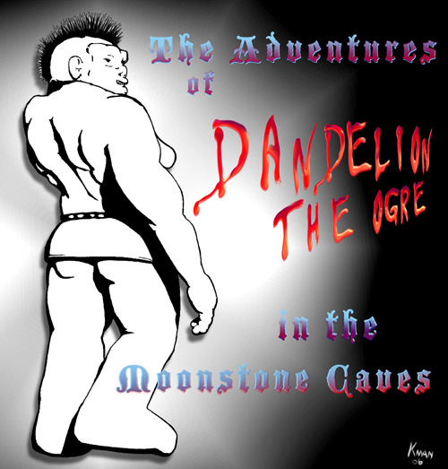
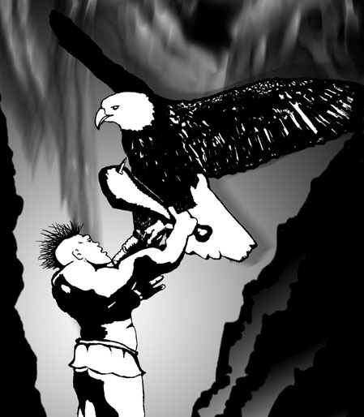
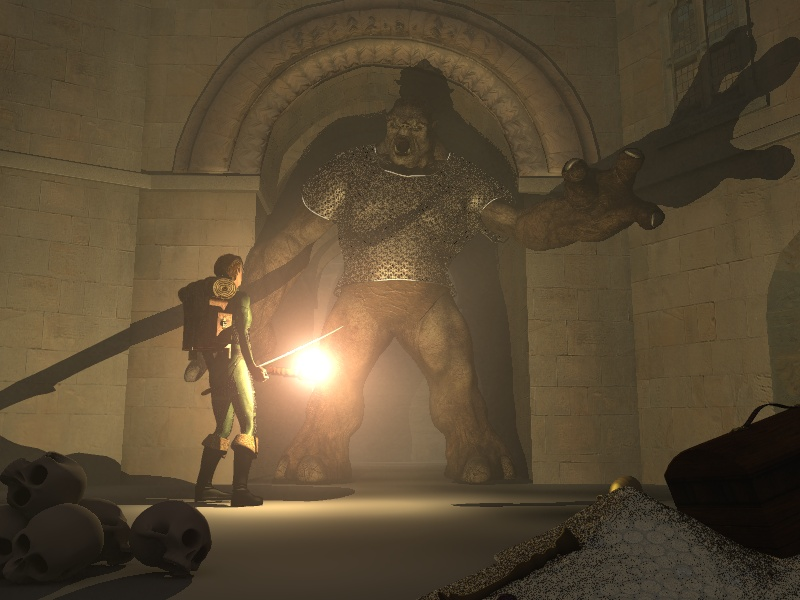

The Adventures of Dandelion the Ogre in the Moonstone Caves
Complete (all 59 moves) / April 17, 2006 (fifth version)
Artwork count: 3
All moves now HTML formatted!
Update! Ken republished this adventure in 2010! He used this archive,
added artwork submitted by his talented Troll friends, and added additional
commentary for the retelling. If you'd like to see his enhanced version of the
adventure, delve over to T&T Delvers Tales. --Taran, July 16,
2010.

Artwork by Quoghmyre
Orchivist's Note:
This main page will serve as a raw dump of the
adventure posts and Trollwalla scribbles in chronological order
as best as I have been able to preserve it—as I see it, I paste it
here. Simple as that.
Eventually I will link this page to a nicely formatted series of pages
with drawings and links and all the nice goodies you would come to
expect from an Internet website of the twenty-first century. For now,
enjoy! If you want to know what all this is about, head on over to Trollhalla and
see for yourself!
Toothily,
Taran Dracon the ORC!
[At this point, Taran grunts, scratches himself, and wanders back to
his cave, Dracon Warren.]
Khenn Arrth via Trollwalla
The Adventures of Dandelion the Ogre in the Moonstone Caves now begin.
Ye narrator reserves the right to make things more interesting as he goes
along.
The Adventures of Dandelion the Ogre in the Moonstone
Caves
Khenn Arrth via Trollmail
Mon, 12 Dec 2005 05:50:01 -0800
as decided by the members of Trollhalla.
One day as Dandelion the Ogre wandered through the ancient forest. clad
only in her lion-skin tunic and carrying only her warclub (12d6) and a
bag to stuff things into, she came upon some ancient ruins, much
overgrown with bushes and flowers. As the bushes were in bloom, she
gathered half a sackful of elfinberries, yum taste like elves, before
she found the pit with stairs leading down into the darkness.
Darkness doesn't scare ogres, and she decided to investigate. Down,
down, spiralling down she went and her eyes adjusted slowly to the
darkness until the entrance was just a spot of light far behind her.
There was something on the stairs ahead of her, but it was just a heap
that didn't move.
She came closer and determined that it was a body, the body of a man or
an elf in ancient worn out armor Apparently it had been trying to get
out, but had died almost in sight of the exit.
"Aw," said Dandelion. "Poor thing."
Did Dandelion:
- pick up the body and carry it back upstairs for burial in the
forest, or
- kick it to one side and continue on down the stairs, or
- search the body?
Once again, it is speed that counts toward tvp in answering, and once
again, we'll need an official chronicler.
Khenn Arrth
Khenn Arrth via Trollwalla
Bury the body 4; loot the body 19.
Dandelion's Adventure part 2
Mon, 12 Dec 2005 22:46:35 -0800
Dandelion took a closer look at the corpse. It was just bones, held
together with scraps of leather belts and old rusted armor. Had
probably been there for years. The bones were pretty well chewed and
broken.
There was however a leather pouch that had survived fairly well. She
took it and opened it.
Inside were three objects--a key, a vial of liquid, and a parchement.
All three had writing on them, and the writing was similar enough that
she figured it was all in the same language. Dandelion couldn't read a
word of it. Nonetheless, she tucked the pouch into a pocket in her
tunic and continued on down the staris.
100 steps further and the stairs flattened out. She found herself at
the intersection of two paths. Glowing moonstones set into the walls
at the intersection gave a dim and pearly light.
Should Dandelion go: (1) left, (2) right, (3) straight ahead, or (4)
back up the stairs?
==Khenn
Khenn Arrth via Trollwalla
Which way does Dandelion go?
- Left--14 votes.
- Right--9 votes.
- straight ahead--1 bote.
- go back--1 vote.
Adventures of Dandelion--Part 3
Tue, 13 Dec 2005 19:36:54 -0800
Dandelion stood in the intersection and decided which way to go. She
decided these were some of the finest dungeon tunnels she had ever
seen--25 feet high, 20 feet wide, nice level floor, smooth walls with
some cryptic signs painted on with blood or black ink or something.
Which way to go?
The longer she stood there, the more it seemed like there was a glimmer
of light coming from the tunnel to the left. She decided to check it
out, and ambled off down that tunnel. It was pretty long--she must
have walked for a hundred strides before she noticed that she was
coming to another intersection. This one had fresh torches blazing
away on all four corners, but they weren't in her corridor--more like
the intersecting one.
She reached the intersection and looked around. To her left was a
good-sized cave with a lot of hay on the floor inside it. There was
also a campfire, and four uruks sat around it, gnawing on meaty bones
and drinking beer from leather jacks.
Ahead of her the corridor vanished off into the darkness. To her
right, a short corridor ended with a stony door blocking it off.
The Uruks clearly weren't expecting company, but one of them looked up
and saw a female ogre standing in the intersection about thirty feet
away. She was looking at them. "Um, guys," he said, in a snarly
voice. "There's an ogress out there in the hall." The other three
jumped up and grabbed for their scimitars.
What did Dandelion do?:
- Attack! Charge into them, swinging her club, or
- say, "woops" and run away--if so, which direction, or
- emit a mighty ogrish bellow and try to frighten them all, or
- try to strike up a conversation?
Comments from the GM. Do you all remember that I said I'd penalize
anyone who doesn't sign their vote with their Trollish name? Well,
several of you have lost over 200 points you could have had so far?
And might continue to lose points if you don't remember to sign.
I have also decided that Khenn Arrth needs a few points for being such
a fine GM and keeping things moving, hence I'll be taking 1000 tvp for
each episode. With 20 of you voters taking that much or more every
turn, you needn't fear me crowding my way into the top ten. :)
Khenn Arrth
Khenn Arrth via Trollwalla
Dandelion's Adventures.
- Attack--6 votes
- Run away--2 votes
- Intimidate--6 votes
- Talk to them--11 votes.
Let's see what charm can do? dandelion, the ball's in your court. What
would you say to 4 Uruks who are trying to gather their courage to
attack you?
Adventures of Dandelion part 4
Khenn Arrth via Trollmail
Thu, 15 Dec 2005 06:09:39 -0800
Dandelion advanced on the Uruks and began to speak in a non-threatening
manner.
Their initial expressions of alarm changed to confusion.
"So I was out picking elfinberries, they taste like elves, y'know, and
they're not so good for danishes or tarts but mix a little gravy in
with them and you gots yourself a hearty meal... hey, do you guys live
around here? We might be neighbors. I didn't know I had any neighbors
but I suppose if I do I ought to be all neighborly-like and, uh, how
does one go about being neighborly-like? You can come over for a cup of
mint tea, but I have to warn you, if you're anything like me, it'll
give you a real head-trip. Wooo! Dancing rainbow city, there. Did you
know mint is in the catnip family? Or is catnip in the mint family? I
always get those two mixed up."
Akkr, leader of this group, was first to recover. "What are you doing
down here, you crazy ogre lady? We're not buying any elfinberries
today."
"Oh, I'm not selling cave to cave if that's what you think," laughed
the ogress. "I'm just exploring. What is this place?"
"This is Moonstone Caves," answered Blaggr, another of the Uruks. "You
think you can just go exploring people's homes whenever you want to?"
"Yes," said Dandelion, hefting her club. "Can't I?"
"It's fine with me," chimed in Ugrozz. "I like to do a little exploring
myself."
"I see you guys were eating," said Dandelion. "Can I have some lunch with
you? I'll share my elfinberries." She grinned.
"Um, no. We were just finishing. Anyway, we must go on patrol."
"Yer welcome to the campfire, if you like."
The uruks began to sidle past her.
"Maybe we'll see you again. If we do, remember the password for today is
"horrible"."
"Yar, as in Hagor the Horrible."
"Who's Hagar the Horrible?" Dandelion asked, but it was too late.
Once the uruks were past her and into the intersection, they set off at
a lope in the direction from which Dandelion had come, leaving her
alone with a dying campfire in a cave mostly full of hay.
What did Dandelion do next? Did she:
- build up the campfire (with some hay) and sit down to wait for the
uruks to return?
- search the cave?
- return to intersection and turn left to continue exploring?
- return to intersection and go straight ahead to the stone door she
saw?
- return to intersection and turn right to follow the uruks?
Remember, speed is of the essence in getting the most tvp for this
episode. I do enjoy all the suggested rewrites, perhaps those comments
could be forwarded to Taran also as a part of an alternative chronicle.
If I see the right chance to use your writings, I will, as I did with
Dandelion's speech this time.
Khenn Arrth
Khenn Arrth on Trollwalla
127 point special award to Dandelion for improvising a conversation that
scared the uruks away.
Khenn Arrth on Trollwalla
The votes are in.
- Search the cave: 15
- Turn left: 3
- Go straight to the stone door: 3
- Turn right: 1.
Ogre searches for needle in haystack.
Adventures of Dandelion part 5
Khenn Arrth via Trollmail
Thu, 15 Dec 2005 21:13:15 -0800
"I wonder if those uruks left anything interesting behind," said
Dandelion to herself. And she began to efficiently search the cave.
15 minutes later she had moved all the hay around, and found the needle
in the haystack. Only it wasn't a needle--It was a nice steel crowbar.
Still, it wasn't nearly as nice a weapon as her own trusty club.
"Now what?" she asked herself.
Two questions to vote on:
Take the crowbar or leave it behind?
and:
- build up the campfire (with some hay) and sit down to wait for the
uruks to return?
- return to intersection and turn left to continue exploring?
- return to intersection and go straight ahead to the stone door she
saw?
- return to intersection and turn right to follow the uruks?
Khenn
Khenn Arrth on Trollwalla
Ok, times to close the voting on part 5.
It's amazing how many of you forgot the first half of the question.
Everyone who forgot received only half points for their vote.
One person forgot and then remembered that he'd forgotten.
He got half points for his vote and 100 point for remembering.
The vote was 13 to 1 in favor of taking the crowbar.
Many of you thought it would be useful for opening the stone door.
You might be right.
- Waiting around got no votes.
- Going left got 4 votes.
- Taking crowbar to stone door got 14 votes altho not everyone
who said go to the door said to bash it in with the crowbar.
- Going right got 4 votes.
Dandelion heads for the door.
Adventures of Dandelion, part 6
Khenn Arrth via Trollmail
Fri, 16 Dec 2005 19:41:11 -0800
Dandelion shambled out of the hay cave carrying her mighty club in one
hand, and crowbar and sack of elfin berries in the other, straight through
the intersection and about another 50 feet down the corridor till it was
blocked off by a stone door.
She stopped and put her hear up to the stone. Not a sound did she hear.
She rapped on the door with the crowbar. Not a sound did she hear other
than her own banging and few high-pitched squeaks.
She pushed against the door, not seeing any handle or knob. It remained
closed. "Locked," she thought, "or maybe just heavy."
(It almost seems a shame to ask the next question but . . . )
Did Dandelion:
- break and enter the room?
- turn back and return to the hay cave?
- turn back and go right at intersection?
- turn back and go left at intersection?
[Have I got you guys turned around and confused yet?]
Khenn Arrth on Trollwalla
The vote: 23 to break and enter, 1 go left, 1 go right. 45 people in the
points this month, but only 25 can participate in the game. Weird.
The Adventures of Dandelion, part 7
Khenn Arrth via Trollmail
Sun, 18 Dec 2005 09:32:40 -0800
Dandelion couldn't get the door open. And she had a crowbar in her hand.
A few inches of stone was not going to stop a determined ogre. So she
broke the door down,tossing the chips of stone and rubble into the corridor
behind her.
When she had a large enough hole in the door, she looked inside. It was
very dark in there, but she could tell some large bulk was lying on the
floor.
She went back to the intersection and took one of the torches placed there.
Then she returned to the room, enlarged the hole, kicked the rest of the
broken door out of the way, and stepped inside.
She was in a roughly pentagonal chamber about 30 feet across. To the north
was another stone door, and alwo to the west. On the floor in the center
of the room was painted a big red star with the points of the star reaching
the corners of the room. Inside the inner pentagon was a huge
skeleton--just about Dandelion's size. Llying amidst the shattered rib
bones was a massive golen nrestplate inset with 7 jewels. Closer
examination showed they were all milky blue moonstones and that the
breastplate had originally hung down from the corpse's neck.
"Um," said Dandelion. "That looks a lot like an ogre skeleton. Nice bit
of jewelry, but . . . I wonder why it was left behind when whoever killed
it looted the body." She examined the breastplate necklace more carefully.
On the back of the gold were several lines of writing in a language she did
not understand. She couldn't tell for sure, but this was just the kind of
thing that almost always had enchantments involved.
Some mice scurried away from where they'd been gnawing on the foot bones
when Dandelion stomped into the room.
What did Dandlion do next?
Did she:
- take the moonstone necklace and wear it?
- take the moonstone necklace and put it in her sack?
- leave it and chase mice?
Speed counts. Remember, as usual, I will give 1000 tvp to everyone who has
updated their attribute points.
Khenn Arrth on Trollwalla
Did not have time to get online at home this morning, and hence tvp for
voting in part 7 have not been posted yet. It is, however, closed, and you
all voted overwhelmingly to put the necklace in the sack. In it goes. Part
8 will be very brief.
Adventures of Dandelion, part 8
Khenn Arrth via Trollmail
Mon, 19 Dec 2005 09:59:32 -0800
Dandelion stood looking at the moonstone necklace for a long time. It had
obviously been crafted for an Ogre, and it would have fit on her quite nicely,
but a little voice kept telling her that the last person to wear it had died.
She looked at the writing on the back of the gold plate--it seemed similar to
the writing on the key, and the parchment--all full of strange curves and
triangular dots. It was not quite like anything she'd ever seen before, but
the more she looked at it, the more she felt it had to be some older for of
Elvish. After all, the corpse on the stairway could easily have been elfin.
Shaking off such thoughts--what good did they do, she stuffed the moonstone
necklace in her sack with the key and parchment, and looked around for an
exit. Closer examination showed that the heavy stone doors that closed all
three entrances were meant to pivot outwards, not inwards, and had no locking
mechanism.
She remembered the door before she demolished it, and it had no outward handle
or knob. Whoever built this room meant for it to be opened only from the
inside. Very strange.
She could walk out through the northern or western doors simply by pushing
kind of hard and swining them open.
What did Dandelion do:
- go south through broken door and turn left?
- go south through broken door and go straight into cave full of
straw?
- go south through broken door and turn right?
- open door to west and go that way?
- open door to north and go that way?
Khenn
Khenn Arrth on Trollwalla
Then, where did Dandelion go from the pentagonal room?
- West--5
- North--9
- South and left--1
- South and straight back to the straw--4. Surprising that so many voted
to do so little.
- South and right--1.
Dandelion continues north into unknown parts of the cavern.
Adventures of Dandelion, part 9
Khenn Arrth via Trollmail
Mon, 19 Dec 2005 21:40:39 -0800
Dandelion pushed the door to the north open and shambled on down a long, long
dark hallway. She still had the torch she had taken from intersection.
The hall continued for at least 200 and then made a right angle turn to the
right. Some 50 feet ahead of her, she saw a lighted doorway.
Something glinted at her feet. Looking down, she saw two gold pieces. She
picked them up and put them in the sack. Then continued walking.
She listened carefully, but heard nothing as she approached the room ahead of
her. Looking inside she saw a large, mostly empty, rectangular room, some 200
feet long by 50 feet wide. She was standing at the western door.
Inside the room were several comfy chairs of varous sizes, some even large
enough for ogres.
Standing up against the north wall was a very large strange box. It had a
handle on one side that looked like it could be pulled. It had 3 little
windows in the center and shown behind one window was a sword; behind the
middle window was a lightning bold, and behind the third window was a gem.
The box appeared to be made of brightly polished brass and was decoreated with
flowers in an intaglio pattern--except that hese flowers were grinning skulls.
There was a slot just to one side of the windows that seemed just the right
size to take a gold piece. Dandelion had never seen anything like it before.
Hanging in the center of the room was a bell with a cord hanging all the way
down to the floor.
There were doors to the east, south, and west. What did Dandelion do?
Did she:
- ring the bell?
- sit down in a comfy chair and see what would happen?
- try to pull the handle of the strange machine?
- put a coin in the slot and pull the handle of the strange machine?
- ignore everything and exit through the south door?
- ignore everything and exit through the east door?
Adventures of Dandelion, part 9.5
Khenn Arrth via Trollmail
Tue, 20 Dec 2005 12:33:34 -0800
No response required.
STR - 45
CON - 33
INT - 72
WIZ - 51
LK - 29
DEX - 60
CHR - 15
SPD - 17
Adds - 103
Adventures of Dandelion, part 10
Khenn Arrth via Trollmail
Tue, 20 Dec 2005 20:21:48 -0800
Dandelion looked around the strange room, but only one thing drew here
interest--the strange machine by the north wall. She looked at it carefully,
and quickly deduced that it would only work if fed a coin. She had an
overwhelming urge to see it in action.
She took the two gold coins out of her sack, pinched one in a mighty paw, and
stood in front of the strange machine. She put one in the slot and listened
to it clink down into the machine. Then she grasped the handle and pulled it
down strongly.
The pictures behind the windows began to move, not all at the same speed,
faster and faster until it was just a blur. Then they began to slow, and
Dandelion watched. What would the machine deliver?
Roll 2d6 and tell the trollgod the result. Doubles do not add and roll over.
--Khenn
Khenn Arrth on Trollwalla
As you have probably all deduced, my plan was to have you all roll 2D6 and in
keeping with the consensus style of play, whatever number got rolled the most
often would be the one that determines what the slot machine did.
Statisticallly, that should have been the number 7, but in the 25 rolls
submitted, 7 only came up once. However, the second most likely number did
come in first--8 was rolled 5 times out of 25, and 9, which is one notch down
in probabability came up 4 times.
Adventures of Dandelion, part 10.5
Khenn Arrth via Trollmail
Wed, 21 Dec 2005 16:50:00 -0800
STR - 45
CON - 32
INT - 72
WIZ - 52
LK - 29
DEX - 60
CHR - 15
SPD - 17
Adds - 103
No response required
The adventures of Dandelion, part 11
Khenn Arrth via Trollmail
Wed, 21 Dec 2005 19:35:11 -0800
The little pictures whirled past, and the pictures revolved with a marvelous
racheddy racheddy noise, but the handle also came off in Dandelion's hand.
"Oops," said Dandelion. "Don't know my own strangth!"
Then the pictures stopped and locked in place. Three glittering diamonds!
Klang! Klinkety, klankety, klinkety klink klink klink rattle rattle, click.
Many gold coins spilled out of a kind of spout into a tray located down around
Dandelion's ankles.
"Wow," said Dandelion. "It gave me money." She started scooping the coins
into the bag and counted them as she did so, There were exactly 50 of them.
"That was kind of fun," said Dandelion, "but I think I broke it."
"Hmmm," said Dandelion. "Money came out of the funny box. I wonder if there
is a lot more money inside the box still."
"Hmmm," said Dandelion. "I have this nice crowbar that i found, and I bet it
would be really good at helping me open up the box to see if there's more
money inside."
"Hmmm," said Dandelion. "I wonder why the box has all these little skulls on
it. Skulls generally indicate dead people. I wonder if the box might have
killed me instead of giving me money."
"Hmmmm," said Dandelion, setting down her big club and sack of loot and
slapping the crowbar back and forth in her big paws. "Should I do it?"
What did Dandelion do? Did she:
- use the crowbar to open up the box?
- leave the box alone?
==Khenn
Khenn Arrth on Trollwalla
Scary. You guys are beginning to understand how I think, and by vote of 15 to
7, you chose to leave the magic box alone. Wise choice, as trying to open it
would have caused an explosion (option 12 on the 2d6 random results chart)
that would have done 10d6 damage. With her girlish CON of only 32, that might
have killed Dandelion outright. You dodged the catastrophe that time, guys.
Voting on the magic box question is now closed.
Adventures of Dandelion, part 11.5
Khenn Arrth via Trollmail
Thu, 22 Dec 2005 07:28:55 -0800
STR - 45
CON - 31
INT - 72
WIZ - 53
LK - 29
DEX - 60
CHR - 15
SPD - 17
Adds - 103
No response required
Adventures of Dandelion, part 12
Khenn Arrth via Trollmail
Fri, 23 Dec 2005 10:32:15 -0800
Dandelion started toward the magic box with crowbar in hand, inserted it's
pointy edge into a crack in the machine, and then caught sight of a line of
skulls grinning at her. A guilty feeling came over her, as she looked at the
lever in her hand. "I broke it enough," she said. "What shall I do now?"
Dandelion's choices:
- leave through exit to the west.
- leave through exit to the south.
- leave through exit to the north.
- pull on the rope and ring the big bell haning from ceiling.
- sit down in a comfy chair and rest a while.
(No, taking the magic box along is not an option. It seems to be attached to
the wall. and is too big anc clunky for even an ogre to carry around
comfortably.)
--Khenn
Adventures of Dandelion, part 12.5
Khenn Arrth via Trollmail
Sat, 24 Dec 2005 11:36:47 -0800
STR - 45
CON - 30
INT - 72
WIZ - 54
LK - 29
DEX - 60
CHR - 15
SPD - 17
Adds - 103
No response required
Khenn Arrth on Trollwalla
Voting results:
- Ring bell: 12
- Leave to north: 8
- Leave to south: 2
- Leave to west: 2.
Rong! Rong! Rong! The iron bell fills the dungeon with sound.
Adventures of Dandelion, part 13
Khenn Arrth via Trollmail
Sun, 25 Dec 2005 13:54:15 -0800
Having backed away from the slightly broken magic box, Dandelion bumped into
the rope hanging down from the ceiling.
"I wonder what this does," she said. "Only one way to find out. Oh, what a
pretty bell!"
She pulled strongly on the cord.
"Rong! Rong! Ronnnnnnggggggggg!" The iron tones of the bell filled the
dungeon caves with sound. She heard eachoes. "rong. rong. ronnnngggg!"
"Wow," said Dandelion, "that was loud! But nothing seems to have changed.
She spoke too soon, because before she could decide what to do next, and
before the echoes had entirely died out of her skull, she heard the slap of
many running feet on stone, and into the room burst small monsters! Dandelion
looked in bewilderment at 14...
hobbs! Not one of them was more than 3 feet tall--they barely came up to her
knees.
But they didn't look like any hobbs she had ever seen before. Their skins
were a darker brown, and they all had bone ornaments transfixing their noses.
They were painted, tattooed, and pierced, and every one of them carried a
blade at least as big as the wielder.
They made a howling noise "ulu ulu ulu ulu!" They looked hostile. One group
of five came from the north, another group of nine came from the south. The
doorway to the west, by which she had entered was clear. What did Dandelion
do?
- Throw down her weapons and surrender?
- Attack the group to the north?
- Attack the group to the south?
- Yell stop! in her loudest voice and try to get a parley going?
- Run for her life to the west?
Trollwalla commentary
Mahrundl said... "Oh dear! I think we chose 'Rong'..."
Gimor Ironfang said... "'rong' indeed
See Dandelion.
See 14 black hobbits.
See Dandelion run.
Run, Dandelion! RUN!!"
Dandelion the Ogre said... "Okay. There's a bell in a room filled with
deadly artifacts, in a dungeon, and if I ring it, hostile critters come
running and surround me brandishing weapons. Stand up if you're surprised by
this. Now hold still. I'm going to use you to practice playing Whack-A-Mole,
because I'm obviously going to need the skill."
Tmuwo said... "But Dandelion, the bell was hanging with the comfy chairs!
Obviously the hobbs are there to kill *for* you, not kill you. Just sit down
and relax. You'll see. ;^)."
Khenn Arrth on Trollwalla
It's rather touching to see how much faith the members of Trollhalla put into
the stopping power of an ogrish bellow. Results:
- yell stop: 12
- run away west: 9
- attack north: 5 (the real Dandelion's choice)
- attack south: 1
This is a classic test for a Charisma saving roll. Dandelion will have to
make the highest Charisma SR she can, and for each level she manages, one
black hobb will fall out of the fight. The rest who aren't impressed will
pile into her in melee combat. Did I mention they have monster ratings of 60
each? Bwa ha ha! Running would have saved her. Attacking to the north might
have saved her.
Adventures of Dandelion, part 13.5
Khenn Arrth via Trollmail
Tue, 27 Dec 2005 16:32:33 -0800
STR - 45
CON - 29
INT - 72
WIZ - 55
LK - 29
DEX - 60
CHR - 15
SPD - 17
Adds - 103
No response required
Trollwalla commentary
Dandelion the Ogre said... "Hey, I was wondering, in light of my increased
WIZ... do I know any spells? I mean, if I bellowed something strategic, like
an all-encompassing "Oh, go away!"... if there's such thing, or if there's
not, maybe I could invent it... after all, I can't tell one hobb from another
so maybe they're all the same hobb times 15... or, um, maybe there's another
spell I could find an excuse to have already known...."
Rrraff said... "Hey, maybe now is the time to put on the necklace :)"
Khenn Arrth said... "In fact, Dandelion might well know some spells if she
were wearing the necklace. having it in the sack has it just close enough to
minimally affect her. In this moment of peril, it's strange how the moonstone
necklace pops into Dandelion's mind at a time like this."
Dandelion the Ogre said... "Dandelion does research before voting. Yep. And
learns a new spell in the process. Dandelion is grateful to generous
gift-giver for giving her v7. And is also grateful to Mahrundl for being,
y'know, a clever ol' spell-thinker-upper."
Rrraff said... "Hmmm... I wonder if I'm thinking of the spell you are
thinking of?"
Mahrundl said... "I'm fairly certain I know which spell you mean, Dandelion.
Go ahead, if you think you can. It will be the first use of that spell ever,
I suspect."
Gimor Ironfang said... "I (reluctantly) voted to don the necklace, and if
spelss come bubbling up, then HideyHole. If it comes to combat, it
effectively halves the number of hobbs, and if not, it makes for a much
easier "tactical withdrawal" -- i.e. Run Like Hell"
Gimor Ironfang said... "There are a number of 7e spells that would be
useful, but being unsure of what level Dandelion may have access to --
K.I.S.S.
I suspect that the necklace may be a "deluxe staff" or something similar."
Dandelion the Ogre said... "First time ever? Ooh. Well, I don't know if I'll
be outvoted or what, but if that spell does somehow go off, we'll see how
well it works. Here's a clue for the rest of youse: I may be a Dandy, but I
voted to turn my opponents into FOPs. (Hahaha bad pun! Gah, I think I've had
entirely too much chocolate.)"
Rrraff said... "HideyHole is a good choice, it was the first one I hit upon,
before I found the one that I believe is being coyly alluded to."
Mahrundl said... "Good one, Dandy-lion! Hidey Hole would be of use too,
possibly of more use than a FOP. But the optional FOP brawl would make for an
amusing time."
Boozer said... "At least you are doing better in your adventure than I did
Dandy..."
Dandelion the Ogre said... "Yeah... we all used you as our land-mine tester,
Boozer, testing the limits of the game and Khenn's patience. But you got to
join a death cult and hang out with cephalopods! Don't underestimate the
value of that."
Mahrundl said... "Dandelion, another idea: since you've thrown the gold to
them, tell them that there's more in the one-armed bandit, and loan them your
crowbar to break into it..."
Skaat said... "Mahrundl - I like the way you think. Let the Hobbs blow
themselves up, then mop up the leftovers and pick up the gold. Sweeeet! as my
son would say."
Khenn: Voting points and episode 15 of Dandelion's Adventures will appear a
bit later today. The votes haven't been tallied yet.
Orchivist's Note: The orchivist either missed the vote results or
they weren't posted to Trollwalla.
Adventures of Dandelion, part 14
Khenn Arrth via Trollmail
Wed, 28 Dec 2005 09:54:48 -0800
"Ulu! Ulu! Ulu! Ulu!" howled the black hobbs as they spread out to surround
the ogress. The waved their flensing knives menacingly, and advanced in tiny
steps.
"STOP!" bellowed Dandelion at the top of her lungs. (Charisma saving roll
here. She rolls 6 and 6, then 4 and 1. CHR = 15 + 17 = 32. Good enough for
3rd level SR. Dandelion is a level 7 rogue at the moment, I think, and if we
add in the level bonus that's 39. Good enough for a L4SR. 68 ap for
Dandelion & 68 tvp too.) Four of the little monsters actually blanched, wet
themselves, dropped their knives and turned to flee, but were grabbed by their
partners before they got far.
Still, it bought her a moment to think. At that moment she wondered if magic
might not be a better tactic. Of course, Dandelion had never done any magic
in her life, but ever since she picked up the moonstone necklace she had been
having an uneasy feeling that something was wrong or right or changing. Maybe
she ought to try putting that necklace on.
It was in the sack, and so were the 51 gold pieces. Black hobbs were
notoriously greedy little buggers--she had an idea.
Scooping out a big handful of coins she tossed them up and to one side so that
suddenly gold coins were raining down on the hobbs. And she followed it up
with another handful to the opposite side. "Stop and have some gold!" she
bellowed.
When the hobbs saw gold coins falling around them, they forgot about the
ogress and dived for the money. Still, Dandelion knew this would only hold
them for a few seconds.
Then her hand inside the sack came into contact with the moonstone necklace,
and a kind of chill shot through her body, almost as if she knew something she
couldn't quite remember.
What did Dandelion do?
- Did she use the momentary distraction to try dashing through the hobbs
and escape? If so, what direction, north, south, or west?
- Did she use the momentary distraction to make a surprise attack on the
hobbs? (1 combat round unopposed.)
- Did she put on the moonstone necklace?
- Did she hurl the necklace away from her as a further bribe to the
hobbs?
Speed counts. In this case, feel free to suggest a following action after
making one of these four choices. For example, if she put on the necklace,
and suddenly found her mind full of spells, would she choose to cast one? And
which one would it be (7th ed. please) If she attacks, would she fight and
run, or just fight to cause maximum destruction, or try to find a defensive
potiiton in a corner. If this was your character and you controlled the flow
for the next turn, what would you do? Speed counts for points. Consensus
counts for what happens?
--Khenn
Khenn Arrth on Trollwalla
The option for Dandelion putting on the Moonstone
necklace won overwhelmingly, though there was much dissension about what to
do. That can lead to the next very short adventure.
Adventures of Dandelion, part 15
Khenn Arrth via Trollmail
Fri, 30 Dec 2005 08:53:44 -0800
The moment her fingers touched the Moonstone Necklace Dandelion had this
almost overwhelming compulsion to put it on. Part of her mind said "you could
smash a few hobbs and escape", but it was like a dozen other voices were
clamoring for her to put the necklace on.
As it settled in place on her breast, with dark hobbs still scrambling around
trying to pick up the gold she had thrown to them, it seemed to her as if she
knew a great many spells, and the urge to cast one overwhelmed her urge to
fight and run. She had never cast a spell before. What would it feel like?
Three spells suggested themselves to her. They had the quaint titles of "Oh
Go Away", "Hidey Hole", and "Firestorm of Protest".
Dandelion saw an intricate pattern in her mind; she began to twist the fingers
of one hand through an elaborate series of gestures, and she cast:
What spell did Dandelion cast?
- Oh Go Away
- Hidey Hole
- Firestorm of Protest
Khenn Arrth
Khenn Arrth on Trollwalla
I declare the voting on part 15 finished. At first there was a firestorm of
protest in the voting itself, but Oh Go Away went away about 2/3 of the way
through. Final results:
- Firestorm of Protest--12
- Oh Go Away--7
- Hidey Hole--2
If it's any consolation, you made the right choice. Oh Go Away would have
only chased a single hobb away. Hidey Hole would have given her a great
opportunity to either escape or wreak havoc. Firestorm should be a lot more
interesting."
Adventures of Dandelion, part 16
Khenn Arrth via Trollmail
Sun, 01 Jan 2006 22:15:34 -0800
The cool metal settled on Dandelion's breast, and her mind began to spin with
magical possibilities. She heard a cool elven voice speaking in her mind. It
said: "trust me! You can handle these vermin." A complex pattern formed in
her mind--a pattern where every cool blue line of fire was broken by a
dripping red gash. "Project this upon them!" said the imaginary voice.
Dandelion projected. (Firestorm of Protest) She could almost see a thousand
red particles of discored scattering through the room and striking the hobbs.
"That's my gold piece," whined a hobb.
"I touched it first," said another. "So nyah nyah nyah!"
"They are all mine," said a big one. "I'm the leader, and I get all the
treasure."
"No you're not!"
"No you don't!"
"Yes, I do!" he insisted. "And I'll hit anyone who says different."
"Not if we hit you first!" Bam!
"Ow! You hit me! And I'm your leader."
"No, you're not. I knocked you down. I'm the leader."
"I'd be a better leader," said a new voice.
"No! Me! I'm the real leader type around here."
"Ha! I got more gold pieces than the rest of you," said another hobb.
"That's not fair. Let's make him share."
"Yeah!"
"First you gots to catch me."
"You're ugly."
"You're uglier."
"Uglier than what?"
"Uglier than an ogre."
"Let's ask her."
"Hey, ogress, who's the ugliest around here. Sneerffle, right?"
"We don't need no ogress telling us who's ugly."
"Yeah, we can see for ourselves. You're the ugly one."
"Oh, yeah, well, you're stupid."
"I might be stupid, but I'm the leader."
"No, you aren't."
"That's my gold."
The bickering came fast and furious.
"Wow," thought Dandelion. "That is a pretty awesome spell. I wonder if they
could even defend themselves when bickering like this."
What did Dandelion do?
Did she:
- attack the hobbs?
- leave through the north door?
- leave through the west door?
- leave through the south door?
Remember, speed counts in getting your answer in.
Adventures of Dandelion, part 16.5
Khenn Arrth via Trollmail
Sun, 01 Jan 2006 22:20:27 -0800
STR - 75
CON - 37
INT - 70
WIZ - 19
LK - 40
DEX - 55
CHR - 10
SPD - 35
Level 2 SR on INT to see if she could cast the spell successfully. Rolled a
5. She succeeded. Gets 10 ap and tvp.
No response necessary.
Amazing how reality flickered and changed just now.
Orchivist's Note: The
reason Dandelion's attributes changed drastically is due to the new year
rolling over at Trollhalla. All attributes were reset to 0 for all
Trollhallans, and attribute points were redistributed. This is a yearly
tradition at Trollhalla.
Adventures of Dandelion, part 17
Khenn Arrth via Trollmail
Mon, 02 Jan 2006 22:31:39 -0800
"This is wild," said Dandelion as she watched half a dozen fist fights break
out among the hobbs, and heard them chanting "Fight, fight, fight!". "I bet I
could slay a lot of them before they remembered to gang up on me, but could I
take them all? Probably not."
Having reached this conclusion, she slipped out through the north door, and
shut it behind her. She found herself in a dark corridor that went only a few
feet before turning sharply to the east. A bit of light seeped in from the
crack under the door of the room she had just left, but when she turned the
corner, all she saw was a faint line of light on the wall. The path ahead of
her was pitch black--too dark even for ogre vision.
"This is too dark even for me," Dandelion said. "I wonder if I know a spell
to bring some light."
"Of course you do," said the sweet voice in her minds. "A will-o-the-wisp
would do." Dandelion briefly saw a pattern of light in her mind. She
projected it out in front of her and there was a dancing ball of light casting
a flickering blue illumination around her. The light didn't go that far, but
it was enough to enable her to walk briskly along, which she did for more than
200 feet until she came to the chasm.
Even with the will-o-the-wisp shining down into the pit, Dandelion couldn't
see the bottom of the chasm. It was nearly 20 feet wide.
"I could probably jump across this pit," Dandelion said to herself as she
appraised the situation."
"Of perhaps you could fly across," said the voice in her mind.
"Or maybe I should climb down into it and explore the pit," she thought.
Or maybe I should just bo back and wait. Perhasps the hobbs will depart when
they don't see me in the room."
What did Dandelion do:
Did she:
- leap across the chasm?
- use the power of the necklace to fly across the chasm?
- climb down into the chasm?
- turn back to the room she left about ten minutes ago?
- try to fly down to the bottom of the chasm and explore it?
Adventures of Dandelion, part 17.5
Khenn Arrth via Trollmail
Tue, 03 Jan 2006 21:32:11 -0800
STR - 75
CON - 33
INT - 70
WIZ - 23
LK - 40
DEX - 55
CHR - 10
SPD - 35
No response is needed.
Adventures of Dandelion, part 18
Khenn Arrth via Trollmail
Wed, 04 Jan 2006 05:44:12 -0800
"Hmm," said Dandelion, "an obstacle. It's not gonna stop me. I'll just climb
down, walk across, and climb back up the other side."
"You could always fly down, or fly across," said the elfin voice in her mind.
"I'll keep that in mind for an emergency," thought Dandelion. "Right now I'd
rather trust my own hands and feet. Who would believe an ogre could fly?"
The lighting was poor. Handholds were not numerous. Dandelion had to be very
careful when she climbed. (Level 4 SRs on STR and DEX to go down
successfully. Rolls 7 and 11. Makes both of them for 28 and 44 a.p.)
About halfway down she found herself coming to the opening of a huge cave.
The smell of decaying meat and long dead things wafted out of it. There was
also a bit of a breeze coming up from below.
Looking around, Dandelion saw a wide ledge that she could reach with a bit of
sideways climbing, and the ledge led to the cave. Decorating the lege was a
lot of bones and some trash. It looked like, over the years, many creatures
had come to grief here.
"Hmmm," thought Dandelion. "A cave inside a cave. I wonder what's in there."
What did Dandelion do?
Did she:
- get over to the ledge and investigate the cave?
- bypass ledge and cave and continue climbing down?
Adventures of Dandelion, part 18.5
Khenn Arrth via Trollmail
Thu, 05 Jan 2006 12:42:16 -0800
STR - 75
CON - 29
INT - 70
WIZ - 27
LK - 40
DEX - 55
CHR - 10
SPD - 35
No response is needed.
Adventures of Dandelion, part 19
Khenn Arrth via Trollmail
Thu, 05 Jan 2006 12:56:25 -0800
Dandelion edged along cautiously toward the ledge that led to the cave. At on
point, one of her feet slipped from the rock, and she almost lurched into the
abyss.
"This would be so much safer if you just flew over there," said the elfin
voice in her mind.
"Don't bother me now," thought Dandelion, "I'm climbing."
In about a minute she reached the ledge and eased herself down on it. It was
easily wide enough to support a young ogress.
The will-o-the-wisp spell died. Darkness enveloped the cavern once again. It
wasn't absolute blackness. A little light seemed to be reflecting off the
chasm walls from some place further down. As her eyes adjusted, she found
that she could sell well enough to get around.
She edged her way along the ledge until she reached the first pile of bones
and trash. Old belts, pouches, equipment. There seemed to be quite a lot of
trash on the ledge near the entrance to the cave within the Caverns.
"One man's trash is another man's treasure," thought Dandelion. "Necklace,
what do you think I should do next?"
"Hmmmf!" came the voice in her mind. "I'm not talking to you any more until
you apologize."
Apologize to a piece of jewelry! The concept struck Dandelion as more than a
little bit absurd. Ogres who talked to rocks were, for the most part,
regarded as insane.
Well, at the moment she had 3 choices.
Did she:
- Apologize to the necklace and open a discussion of what to do next. (If
so, what questions should she ask?
- Search a pile of trash for treasure
- Go straight into the very dark cave
--Khenn Arrth
Khenn Arrth on Trollwalla
By vote of 17 to 4, it has been decided that Dandelion shall investigate the
cave.
Adventures of Dandelion, part 20
Khenn Arrth via Trollmail
Sat, 07 Jan 2006 15:38:04 -0800
"You won't talk to me unless I apologize?" said Dandelion is some
mystification.
The moonstone necklace said nothing.
"Are you a person, or a piece of jewelry?"
The moonstone necklace said nothing.
"Alright! I'm very sorry I hurt your feelings. I'm just a dumb ogre, you
know. How was I to know that you had feelings that could be hurt?"
"There is something to what you say," said the necklace. "But you should be
more considerate of inanimate people like me."
"I will, I will," said Dandelion. "Do you mind if I look through this pile of
trash while we talk?"
"It's kind of rude," said the necklace, "but you might not have much time left,
so I don't mind."
"Do you have a name?" asked Dandelion.
"You can call me, Min-Kon"
"How did you get to be a necklace?"
"That was a mistake, I'm afraid. Long ago I was an elfin sorceress. I was
trying to learn how to hide my soul outside my body. I sucessfully
transferred it to this necklace, and when I did, my body died. And I've been
trapped like this ever since. Take my advice--keep your soul inside your body
at all times."
"Good advice," said Dandelion. "Um, if I may ask, what happened to your last
owner?"
"You mean my last slave," said the necklace. "She died in her sleep."
"Why did she die in her sleep? Could it have anything to do with the weird way
I've been feeling ever since I put you on?"
"Mmmmmmm, could be!" chimed the necklace. "I supply the magic, you supply the
willpower. Kremm must come from somewhere to power it, and it comes from you.
To be certain that I have enough kremm to cast any spell you want me to, I
convert a small part of your lifeforce into stored magical energy.
I'm doing that
pretty much all the time."
"Eep," said Dandelion. "you're a dead elfess vampiress necklacess?"
"I'm no vampire, you keep all the energy. I just change it."
"Can you change it back?"
"That happens automatically when--look out!"
Something rushed out of the cave and attacked Dandelion. She barely had time
to throw up her arms before a heavy body crashed into her--wings buffetted her,
and knocked her off the ledge. She started to fall.
The creature stayed right with her, claws sunk into her skin. Dandelion got
the impression that she had been attacked by some form of giant cave eagle. (6
hits to CON in first buffet.)
The necklace flapped wildly against Dandelion's breast, but the voice continued
calmly enough, almost as if it were enjoying the situation. "This would seem
like a good time to cast some magic. Would you prefer to fly, fight, or
teleport to (temporary) safety?
What did Dandelion do:
Did she:
- cast fly me through the necklace?
- cast a combat spell through the necklace? If so, which one?
- cast a wink-wing spell through the necklace to get back up to the
ledge?
- fall like a stone and fight all the way down?
Khenn
Adventures of Dandelion, part 20.5
Khenn Arrth via Trollmail
Sat, 07 Jan 2006 20:16:18 -0800
STR - 75
CON - 27
INT - 70
WIZ - 29
LK - 40
DEX - 55
CHR - 10
SPD - 35
No response is needed.
Khenn Arrth on Trollwalla
The voting for part 20 is now closed and the results are:
- Wink-wing back to theledge--14.
- Combat spell like TTYF--3.
- Just fall and fight--1.
- Fly Me--5.
At the moment, Dandelion, that necklace has kept you alive at least twice.
Adventures of Dandelion, part 21
Khenn Arrth via Trollmail
Mon, 09 Jan 2006 07:05:23 -0800
Dandelion thought this would be a good time for magic. The moment she made
that decision, varous possibilities flashed into her mind. There was one for
flying, and one for popping back onto the ledge, and one for blasting the eagle
with magic. Of the the three, she liked the one for putting her feet back on
solid ground the best. She concentrated on the mental image of flashing diamonds
all disappearing and going to one place. (L4SR on INT. Rolled 3, 6--made it.
36 a.p.)
<Wink Wing>
Dandelion's feet hit the ledge with a slight jar. The eagle was not in sight.
Eight puncture holes in her arms oozed blood. Luckily she had gotten her arms
up before the eagle hit her.
"You only have a few seconds," said Min-Kon. "Your kremm is rather low. You
may not have enough power to cast another spell. Your foe is more dangerous
than it looks."
Dandelion took her club off her back. "I'm more dangerous than I look, too."
she said.
Everything was still happening very swiftly, but it almost felt like slow
motion to her.
She heard a great screech. The giant bird was coming.
What did Dandelion do?
Did she:
- Try another spell? If so, what?
- Get her club ready for combat and just fight it physically?
- Run into the eagle's cave for a better defensive position?
--Khenn
Adventures of Dandelion, part 21.5
Khenn Arrth via Trollmail
Mon, 09 Jan 2006 07:09:15 -0800
STR - 75
CON - 35
INT - 70
WIZ - 15
LK - 40
DEX - 55
CHR - 10
SPD - 35
No response is needed.
Khenn Arrth on Trollwalla
The vote on Dandelion's tactics:
- Fight bird with club without magic: 6.5
- Get inside the cave to fight: 11.
- Cast a spell of some sort: 3.5.
Dandelion takes cover.
The next turn will be an epic battle between Dandelion and the cave eagle. I
haven't found time to game through it yet, so be patient. It's coming. The
move to the cave was tactically sound and will help her a lot.
Adventures of Dandelion, part 22.5
Khenn Arrth via Trollmail
Wed, 11 Jan 2006 09:40:03 -0800
STR - 75
CON - 34
INT - 70
WIZ - 16
LK - 40
DEX - 55
CHR - 10
SPD - 35
No response is needed.
I know. you haven't seen part 22 yet, but since Dandelion uses no magic in
turn 22, I already know the results of part 22.5.
--Khenn
Trollwalla Commentary
Vin Ahrr Vin said... "Was there an adventure post #22? I recall getting 21,
21.5, and 22.5 but no 22. :-("
K'jherrr said... "Khenn mentioned in 22.5 that we had all the info we needed
because no magic was used."
K'jherrr said... "However, I do have to admit that the plain numbers lack
something compared to the Trollgods storytelling abilites..."
Rrraff said... "I believe Khenn is waiting for Weta Workshop to deliver the
necessary special effects shots before he sends out the epic ogre vs eagle
battle..."
Khenn Arrth said... "Part 22 hasn't been written yet. The 22.5 was there
just to show you how using or not using magic affect D's attributes."
Adventures of Dandelion, part 22
Khenn Arrth via Trollmail
Thu, 12 Jan 2006 08:03:46 -0800

(Artwork by Quoghmyre.)
Dandelion could see fairly well in the dark, but it was really dark in that
part of the Moonstone Caverns. The wasll of the chasm was just a solider part of
the darkness, as was the ledge underfoot. When the eagle rose up above the
ledge on great flapping wings, it was simply a black cutout of a giant bird
against the fainter gray obscurity all around it. The cave mouth that Dandelion
sought showed only as and even blacker hole in the darkness that was the wall.
Kicking bones and trash out of her way because she had no time to watch where
she was going, Dandelion moved cautiously but swiftly toward the cave.
And it was loud. The eagle had screeched when it first attacked her, and then
had been mostly silent as the two fell together, but now that it was circling
around for another diving attack, it began shrieking again, and so loudly that
Dandelion's ears hurt from the noise. It was difficult to hear onself think in
this racket, much less the soft voice of Min-Kon.
"SHREEEEEEEEEEEE CHEEEEEEQQQQQQQQQQ!" Just to give you the faintest idea of
the cacophony . . .
Dandelion thought about throwing a spell at the cave eagle, but when she did,
she got a baaaaad
feeling--mush as if she had swallowed ice and there was a lump of the cold
stuff in her stomach.
She ducked into the cave mouth just as the bird swooped through the space where
she had been standing.
Compared to the darkness inside the cave, the darkness outside it was almost as
bright as early dawn. Here came the eagle, screeching its lungs out, diving
toward the cave mouth like a guided missile. Dandelion held her club in a
two-handed grip and prepared to make a mighty swing when the eagle came into range.
But, it didn't fly into her club like a fastball in a baseball game. Instead
it stopped short and lurched back in the air, and Dandelion's swining club
swooshed by harmlessly until the backswing banged into a stone wall and almost
jarred the big piece of wood out of her hands.
Meanwhile, the eagle landed, and scuttled forward, pecking with its huge curved
beak and flailing with its mighty wings.
And then began a strange melee as the bird darted in and out, trying to rip her
open with its talons, or buffet her with huge wings, or gore her with its
tearing beak. Sometimes airborne, sometimes on the ground, always flickering in and
out with savage speed and intensity. Dandelion flailed and punched and kicked,
sometimes fending the bird away from her face and throat--usually missing
completely.
Eagle: Monster rating 200 on the ground and in limited area--400 in the open.
21D6 +100.
Dandelion: 12D6 + 155.
Round 1:
Eagle: 187 + 5 spite.
Ogre: 205 + 4 spite.
In the first mad flurry of combat, Dandelion felt eagle talons rip along her
leg, opening a horrid wound. But she also felt her club connect more than once
with eagle body or wing.
Dandelion's Con: 29.
Round 2:
Eagle: 161 + 4 spite.
Ogre: 191 +1 spite.
Although she hit it more than once the eagle also scored, doing more damage
with a rip in Dandelion's cheek that barely missed her eye.
Dandelion's Con: 25.
Round 3:
Eagle: 158 + 1 spite.
Ogre: 197 + 1 spite.
It was hard to tell, but the eagle seemed to be weakening. It only nicked her
once, though even that one hit with the beak stung badly.
Dandelion's Con: 24.
Round 4:
Eagle 121 + 4 spite.
Ogre: 203 + 3 spite.
After 6 minutes of fighting, Dandelion finally hit the bird solidly--so solidly
that she heard bones break and the screeching turned to terror. But she took
another bad gouge herself.
Dandelion's Con: 20.
The badly wounded eagle tried to flutter and scurry away from the ogress. One
wing was broken so it couldn't fly any more. Dandelion thought she could finish
it off with one more effort, but she was bleeding badly in several places.
The voice of the necklace sounded in her mind. "You could heal yourself by
using magic," it said. "And do you know that you have been poisoned?"
Dandelion didn't know that. She was in a lot of pain, and maddened with a
desire to slay that foul fowl. What did she do:
- Follow the wounded eagle and finish it off?
- Make a light to see what was in the cave with her?
- Sit down and let the necklace heal her of her wounds and
poisoning?
Khenn Arrth said...
The vote on move 22 is:
- sit down and heal: 13
- follow and kill the eagle: 6
- get the lights turned on: 2.
As soon as I figure out what the healing costs and how it affects other
things, I'll get part 23 written.
Adventures of Dandelion, part 23
Khenn Arrth via Trollmail
Sat, 14 Jan 2006 17:05:10 -0800
"What do you mean, I'm poisoned?" Dandelion asked the necklace.
"The eagle's claws are filthy," Min-Kon answered. "They made you bleed. You
already have blood poisoning. If left untreated your flesh will start to
mortify and you will surely die."
"Oh, is there a spell to deal with poisons?" Her mind instantly filled with
spells. "Oh, I see there is." Dandelion concentrated. "Too Bad Toxin!" she
shouted. There was a feeling like fire that ran through her blood. It hit her so
suddenly that she bellowed in pain and the echoes of the cave made it seem as
if a dozen ogres were bellowing. "Arrrrrghhh!" (L4SR on INT to cast. Needs a 4
or better. Rolls 15 with 2 doubles. 60 a.p.)
In the darkness Dandelion really couldn't tell how badly she had been wounded
by the eagle, but she could feel herself bleeding from multiple punctures and
scratches. "Is there a spell to heal me?" she asked Min-Kon.
"Of course," the necklace replied. "But there is a problem. You don't have
enough kremm left to do much healing."
"Can we stop the bleeding?"
"Yes, you can manage that much."
"Then let's cast the healing spell." A pattern filled Dandelion's mind--like a
broken snowflake putting itself back together. She put forth her will. (L2SR
on INT. Needs 4, rolls 6. 12 a.p.
A feeling of warmth and well-being filled her. The bleeding stopped and the
scratched and punctures scabbed over. Unfortunately, the feeling did not last
for very long, and the burning sensations in the wounds soon returned.
Dandelion felt a lot better. She could still feel her wounds, but she felt a
lot better anyway. Was it possible to be healthy while hurt?
She could still hear the eagle screeching somewhere out on the ledge. She had
hurt it badly, broken at least one wing, smashed its beak, but it was still
alive.
"No rest for the weary," Dandelion said. "What should I do now, Min-Kon."
"Rest," said the necklace in a whisper so faint Dandelion wasn't sure she even
heard it.
What did Dandelion do? Did she:
- Follow the eagle outside and attack it again?
- Crawl over to one side of the cave and rest? If so, for how
long?
- Make a light with flint and steel and explore the cave?
- Take off the necklace and put it back in her treasure sack?
Adventures of Dandelion, part 23.5
Khenn Arrth via Trollmail
Sat, 14 Jan 2006 17:07:15 -0800
STR 75
Con 35
INT 70
WIZ 1
LK 40
DX 55
CHR 10
SPD 35
No response is required.
Trollgod on Trollwalla
The voting on turn 23 is now over. Interestingly enough in light of turn 21,
several people voted for taking a nap.
Results:
- follow and kill the eagle: 4
- make light and explore the cave: 6
- Rest and regain magical strength: 8
- remove necklace: 4
Resting carries the vote, but you may be surprised at the result. (Evil grin)
Adventures of Dandelion, Parts 24-28
Khenn Arrth via Trollmail
Mon, 16 Jan 2006 19:15:24 -0800
The dying eagle tumbled off the side of the ledge and fell to its doom.
Feeling strangely tired and washed out, Dandelion staggered off to the side of
the cave, sat down, and took the necklace's advice to rest. Before long her
eyes closed and she fell asleep.
Nearly an hour later she woke up, feeling refreshed, disoriented, and a bit
nauseous. In fact, it was the bile rising in her throat that made her wake up.
"Ah, good," said the necklace. "You have some magical power again. Not as
much as you need, but we're no longer helpless."
"I don't feel so good," said Dandelion.
"You could rest some more," said the necklace. "Perhaps another hour . . ." it
said seductively.
Dandelion pulled herself to her feet. "I don't think so," she said. "I felt
better before I rested. If I rest again, I might just die in my sleep."
"I need to get back to exploring, or maybe find my way back out of these
caves."
"You might need some light," suggested the necklace.
What did Dandelion do next?
- Did she use flint and steel to make a light and explore the cave?
- Did she use the necklace to cast "Will-o-the-wisp and explore the
cave?
- Did she exit the cave and search the pile of trash?
- Did she exit the cave and continue climbing down the chasm wall?
- Did she exit the cave and climb up the chasm wall?
- Did she exit the cave and cast "fly me" to go either up or down?
Adventures of Dandelion, part 28.5
Mon, 16 Jan 2006 19:23:27 -0800
STR 75
Con 21
INT 70
WIZ 17
LK 40
DX 55
CHR 10
SPD 35
No response is required.
Trollwalla Commentary
Dandelion said...
Whew! I'm still alive. And my middle name appears to be 'the', Naharaht, but
I still enjoy the occasional roast human with fava beans and a nice Chianti.
Maybe Hannibal and I bought the same cookbook. I got mine from that flying
silver bookmobile. Maybe he did too.
Rraff said...
Alive? not for very much longer if your Con keeps plummeting like that. I
propose a write-in campaign for the next turn: TAKE OFF THE NECKLACE! HURL IT
INTO THE PIT!
Toll said...
The necklace merely wants to be her best friend. You wouldn't let your
bestest friend starve to death, would you? Just a few CON points an hour. A
big ogress-type like Dandelion could handle that for almost a whole day.
Naharaht said...
It is a pity that the Eagle fell into the pit. I was hoping that Dandelion
would barbeque it. I imagine that it would taste like chicken although a bit
tougher.
Dandelion said...
Ogre tires easily. Thus the mediocre (at best) CON. Ogre thinks she may
participate in Rrraff's write-in campaign.
Taran said...
I knew we shouldn't have rested poor Dandy! Then again, I voted for attack
the eagle and knock it off the ledge, which happened anyway. Oh well.
Khenn Arrth said...
Voting on turn 28 is closed. The results are:
- will-o-the-wisp: 2
- flint and steel: 15
- go out and search trash: 3
- go out and climb out of cave area: 1
Dekhurrsio said...
In dandelion's continuing adventures can we make sure that she's used up all
her wiz before sleeping or chuck the necklace in the bin?
BTW I fancy eggs :o)
Vin Ahrr Vin said... "By the way -- did I miss something in Dandelion's
quest? Why were sessions #24-28 numbered together?"
Dandelion the Ogre said... "I was sleeping, Vin."
Adventures of Dandelion, part 29
Wed, 18 Jan 2006 06:10:29 -0800
Dandelion had taken one of the few torches she'd seen on the cave walls, and
extinguished it when she didn't need the light. She also carried flint and steel
and a small amount of dry straw to use as tinder in her bag. (She picked some
up in the cave full of straw). Taking out a handful, she quickly struck some
sparks, got the tinder going in a tiny fire, and lit the torch.
By the flickering torchlight, she saw she was in a good-sized semicircular
depression, possibly carved out of the stone by intelligent beings. In the center
was a huge nest of sticks, and scraps of clothing, straw, bones, etc. In the
center of the nest were three eagle eggs, each as large as Dandelion's head.
"You should eat some of those eggs," said the necklace. "They are slightly
magical."
"Hmmm," said Dandelion. She continued looking around. On close examination,
she found a coin--an old gold piece with some unfamiliar face on one side and a
mountain on the other. Moving around, she found another. It was possible that
coins were widely scattered through the cave.
She could also search the nest, but she'd have to tear it apart to do that.
Or, she could leave the cave and get on with her exploration. What did Dandelion
do:
Did she:
- take the three eggs and put them in her sack?
- eat an egg on the spot?
- search the cave thoroughly and pick up all the gold coins?
- leave the cave and search the piles of trash outside it?
- leave the cave and climb up?
- leave the cave and climb down?
- leave the cave and cast "fly me" to go up or down?
Speed counts. Also, if I get 10 letters saying she should either take off the
necklace and store it in her pack, or take it off and get rid of it completely,
then Dandelion will do so. However, at the moment, there is no reason for her
to take it off that she knows about.
Adventures of Dandelion, part 29.5
Wed, 18 Jan 2006 15:05:26 -0800
STR 75
Con 15
INT 70
WIZ 23
LK 40
DX 55
CHR 10
SPD 35
No response is required.
Khenn Arrth said...
"The voting on part 29 is over. The results were:
- eat an egg: 14
- pick up the gold: 2
- take off necklace: 2 (this choice is available each turn from now on,
but will be unstated. If we get as many votes for take off necklace as we
do for the most popular choice, Dandelion will take off the necklace and
do her most popular choice on the next turn.
- climb down: 2
- put all 3 eggs in
the sack: 3
- climb up: 1.
Adventures of Dandelion, part 30.
Thu, 19 Jan 2006 08:14:53 -0800
Seeing the eggs made Dandelion remember that she was getting hungry. She
grabbed the nearest one and cracked it against the cave wall. Some gooey liquid
leaked out. In a few deft movements she stripped away all the eggshell, and what
was left in her large hand was an unborn baby eaglet, moving weaklly.
She ate it. Took about 3 bites. Mmmmm, crunchy.
"I feel better now," said the ogress to herself, or maybe to the necklace.
"Now back to business." She put the two remaining eggs in her sack, just in case
she wanted a snack later.
What did Dandelion do next? Did she?
- search the cave thoroughly and pick up all the gold coins?
- leave the cave and search the piles of trash outside it?
- leave the cave and climb up?
- leave the cave and climb down?
- leave the cave and cast "fly me" to go up or down?
--Khenn Arrth
Adventures of Dandelion, part 30.5
Fri, 20 Jan 2006 10:34:03 -0800
Dang, I muffed it. Someone send me a copy of 29.5. Anyway, the changes for
30.5 look like this. WIZ up by 4. CON 26 out of 11 normal CON points.
Khenn
Trollwalla Commentary
K'jherrr said... "In part 30.5, could the Trollgod please explain to this
old troll exactly what "26 out of 11 *normal* CON points" means? "
Khenn Arrth said...
"K'jherr, it means that her true CON value is 11. If
wounded, it would tend to heal back to 11. At the moment, however, she has 26
CON points."
Adventures of Dandelion, part 30.6
Fri, 20 Jan 2006 10:57:56 -0800
STR 75
Con 26 of 11
INT 70
WIZ 27
LK 40
DX 55
CHR 10
SPD 35
No response is required.
Khenn
Adventures of Dandelion, part 31
Sat, 21 Jan 2006 12:45:54 -0800
"While I'm in here," thought Dandelion, "I might as well pick up the gold on
the floor. I'm surprised an eagle had so much of it anyway."
She began a careful search of the cave. It took her about half an hour, and
she picked up 200 pieces of gold. More than half of it was actually in the nest.
"That should buy lunch back in Kozon," she muttered. "Not much more to do in
here."
She wandered out of the cave, still carrying the torch. It would burn for
another hour at least. She saw the big pile of trash she had considered searching
a couple hours ago. What an unsavory heap of bones, body parts, moulted
feathers, organic waste, and Trollgod alone knows what. Nothing was exactly gleaming
and calling out to her, but there might be something valuable if she took the
time to search.
On the other hand, what was that strange drumming noise coming from the chasm
below?
On the third hand, she was seriously thinking about getting out of these caves.
And on the fourth hand, what was this necklace doing to her life?
What did Dandelion do? Did she?
- Take off the necklace and put it in her sack?
- Take off the necklace and throw it away?
- Forget about the necklace and search the big pile of trash?
- Climb up out of the chasm?
- Climb down to the next level?
- Use necklace to fly back up out of the cavern?
- Use necklace to fly down to the next level?
Speed counts. Notice to new members of Trollhalla, you can particpate in this
game also. All you have to do is email Trollgod with your choice. It's worth
tvp. And don't forget to edit your profile, assign attribute points, choose a
picture, etc.
--Khenn Arrth
Trollwalla Commentary
Gimor Ironfang said... "QUICK!!!
Hurl the bitch Min-Kon over the edge and into the chasm - Dandelion has two
turns to live otherwise! "
Dekhurrrsio said... "Search the trash then cast fly me to convert wiz to
con..."
Dandelion the Ogre said... "I'm bleeding CON too fast. I need to get rid of
the necklace as soon as possible. Then if I fail, I'll still be alive to try
one more thing."
Adventures of Dandelion, part 31.5
Sat, 21 Jan 2006 12:56:43 -0800
STR 75
Con 25 of 7
INT 70
WIZ 31
LK 40
DX 55
CHR 10
SPD 35
Trollwalla Commentary
Gimor Ironfang said... "-4 CON = +4 WIZ each turn
With 7 CON left that makes 2 turns until death. Now, if Dekh is correct in
that expending WIZ will raise the base CON..."
Dekhurrrsio said... "Ahh, now somebody else said wiz was converted back to
con i may be wrong... "
Dekhurrrsio said... "Poor baby would be good? Perhaps? Maybe? OK just chuck
it :0) "
Naharaht said... "If the necklace is capable of doing it, Dandelion has
enough WIZ to cast 'Blow me to...'. If the Trollgod would allow it Dandelion
could go home and then ditch the necklace till her next adventure."
Khenn Arrth said... "The voting is now closed for part 31 of Dandy's
adventures. And here are the results:
- Climb up out of the chasm: 6
- Take off necklace and put in bag: 8
- Search trash pile: 3
- Throw necklace away in chasm: 4
- Climb down to next level: 2
- Use necklace magic to fly back up to level 1: 1."
Toll said... "Someone voted to keep using the necklace???? I think Min-Kon
is secretly a member of Trollhalla and trying their best to gain a
Dandelion-minion."
The Adventures of Dandelion, part 32
Sun, 22 Jan 2006 10:52:52 -0800
Dandelion looked at the huge pile of trash on the ledge, and suddenly it just
didn't seem worth the effort.
"You should search it," said the necklace. "There may be magical items in
there, that we, I mean you, could use."
"If there are, they didn't do the previous owners much good," Dandelion
answered. "I would probably get a disease from mucking about in that."
"I think I could just climb up out of this hole," Dandelion muttered.
"Why climb? Let me fly you out," countered Min-Kon.
A strong sense of revulsion flooded through the ogress. "Stop telling me what
to do all the time," she shouted. Then she grabbed the necklace and tried to
lift it off her body.
It was stuck. It seemed to be glued to her skin. "You don't want to take me
off," said the mental voice of Min-Kon, sounding just a bit alarmed.
"Oh, yes I do," said Dandelion, and she peeled the necklace off her skin, link
by link. In some places some of the skin came off with it. When she finally
had it off, and it hung there helplessly in her hand, she drew her arm back to
throw it into the chasm.
"I'm sorry," said Min-Kon in her mind. "Don't throw me away. I'm worth a lot
of money." The voice was very faint. "I'm only trying to help you."
Dandelion thought for a moment. In fact, the necklace had helped her more than
once, especially when the eagle knocked her off the ledge. And it certainly
looked like it would be worth more than 200 gold pieces. (She who hesitates is
lost.) She aborted her throw, and instead stuck the necklace back in her
carrysack.
Now to get out of here. Dandelion approached the chasm wall, and very
carefully began to climb. As she climbed she noticed a slightly easier chimney in the
rock leading off to her left, and found herself ascending there. It ook at
least half an hour, but finally the chimney opened up and Dandelion found herself
emerging from a hole in a tunnel floor just barely large enough for her to fit
through it.
Dandelion found herself in a long, straight, dark tunnel. Her torch had gone
out during the climb, and there wasn't much left of it. Dandelion hadn't really
needed it. The passage led off to left and right, and in the far distance in
both directions it looked like there was some torchlight.
This was a simple sort of choice. Did she:
- go left?
- go right?
- take the necklace out of the sack and put it back on, and ask Min Kon
what to do?
Remember, if you get this letter you can vote, whether you've been
participating in the story so far or not.
Taran, what's the chances of getting Dandelion's
saga on a web page so people can see what has heppend so far?
--Khenn
Adventures of Dandelion, part 32.6
Sun, 22 Jan 2006 10:57:06 -0800
STR 75
Con 24 of 6
INT 70
WIZ 32
LK 40
DX 55
CHR 10
SPD 35
No response is required.
--Khenn
Trollwalla Commentary
Dandelion the Ogre said... "Grr... stupid, no-good, horrible, rotten
necklace... now I remember why I don't wear jewelry as a general rule. No,
actually it's because I have a tendency to lose it. So why can't my tendency
kick in now?"
Dandelion the Ogre said... "Or... maybe if I were to successfully explain to
the necklace that killing me would only complicate its existence even more,
so it should make more of an effort to let me live... what's my CHR? 9 or 10
or something, huh? Crud."
Khenn Arrth said...
"Dekh and everyone else: more people have to vote to
dump it than vote to keep it in order to get rid of the necklace. Since it's
in a sack where Dandelion wouldn't even think about it right now, how likely
is that to come up? . . ."
Khenn Arrth said...
"Dandelion, the necklace isn't trying to kill you. It
needs you to have a pseudo-existence. It is only performing its function the
same as any machine would. I shouldn't say this, but it would be so simple to
save Dandelion--you guys will all be kicking yourself if you let her die
because of this."
Toll said... "Easily save Dandelion? Is the moonstone necklace like a
psychic battery that would release her stolen CON back if crushed?"
Dekhurrrsio said... "Is the necklace converting Wiz back to Con? I don't
have the emails. What about poor baby or is the necklace a curse?"
Vestinious said... "As I dont know the story much does the necklace give
dandelion the ability to cast magic spells and if so by casting poor baby she
would have to use all of her WIZ to get her CON back upto a healthy level. "
Vestinious said... "And as ken said the necklace needs her to have a
pseudo-existence would it then not make any sense in killing her."
Vestinious said... "Or maybe a darker story , its looking for a new host to
take over , dandelion be afraid be very afraid :("
Dandelion the Ogre said... "I'm already kicking myself because I haven't
thought of it, Khenn. And not for lack of trying. And I'm also trying to vote
in-character... Ogres, not being social creatures, really would tend to get
annoyed at all that yammering, and really would have jewelry-trust issues."
Gimor Ironfang said... "The answer to the necklace dilemma can be found by
carefully reviewing the ##.5 turns - which is all I can say on the matter as
I have been sworn to silence under the confidence of the Trollgod himself."
Khenn Arrth said...
"Taran, if you even just posted the .5 turns for the
last 10 turns or so, I'm sure a great light would dawn on people."
Khenn Arrth said... "Just counted up the votes on part 32. Not quite enough
yet, so I'll leave a few more hours to get your votes in.
Vestinious said... "I've only got 2 .5 posts but I can see WIZ going up and
CON going down that obivious so maybe its a rebirth thing wizard out of
troll ?"
Dandelion the Ogre said... "Yes, please post the .5 posts, Taran. And I know
it may be something as simple as continuing to play Min-Kon's game of
bouncing the points from CON to WIZ and back again. I'm just resisting that
because I find that idea disturbing, and I'm guessing Dandelion would not be
amenable to that even if she doesn't know about it because of her
aformentioned unwillingness to be bossed around."
Dandelion the Ogre said... "That last comment was durn near
incomprehensible. Sorry. Here's a translation: "Dandelion letting Min-Kon
mess around with her like that? EEEEEEWWWW!" *shudder shudder*"
Naharaht said... "I think that the necklace transfers point back to CON when
Dandelion is wounded because it is in the necklace's best interests for
Dandelion to stay alive. "
Grimtongue said... "Ask the necklace. She was about to tell Dandelion in
part 20 how to do it but the eagle attacked and interrupted.
Necklace: "I'm no vampire, you keep all the energy. I just change it."
Dande: "Can you change it back?"
Necklace: "That happens automatically when--look out!""
Grimtongue said... "Perhaps Dandelion can remember that the necklace never
finished her sentence and takes it out to ask it to finish. Of course, the
Necklace could also heal her. She probably has enough energy by now."
Grimtongue said... "I don't seem to have all of the rounds but here is what
I do have. I hope this works:
| Round: | 9.5 | 10.5 | 11.5 | 12.5 | 13.5 | 14.5 | 15.5 | 16.5 | 17.5 | 18.5 | 19.5 | 20.5 | 21.5 | 22.5 | 23.5 | 28.5 | 29.5 | 30.5 | 31.5 |
| STR | 45 | 45 | 45 | 45 | 45 | | | 75 | 75 | 75 | | | 75 | 75 | 75 | 75 | 75 | 75 | 75 |
| CON | 33 | 32 | 31 | 30 | 29 | | | 37 | 33 | 29 | | | 35 | 34 | 35 | 21 | 15 | 26 / 7 | 25 / 7 |
| INT | 72 | 72 | 72 | 72 | 72 | | | 70 | 70 | 70 | | | 70 | 70 | 70 | 70 | 70 | 70 | 70 |
| WIZ | 51 | 52 | 53 | 54 | 55 | | | 19 | 23 | 27 | | | 15 | 16 | 1 | 17 | 23 | 27 | 31 |
| LK | 29 | 29 | 29 | 29 | 29 | | | 40 | 40 | 40 | | | 40 | 40 | 40 | 40 | 40 | 40 | 40 |
| DEX | 60 | 60 | 60 | 60 | 60 | | | 55 | 55 | 55 | | | 55 | 55 | 55 | 55 | 55 | 55 | 55 |
| CHR | 15 | 15 | 15 | 15 | 15 | | | 10 | 10 | 10 | | | 10 | 10 | 10 | 10 | 10 | 10 | 10 |
| SPD | 17 | 17 | 17 | 17 | 17 | | | 35 | 35 | 35 | | | 35 | 35 | 35 | 35 | 35 | 35 | 35 |
Khenn Arrth said...
"We didn't get as many votes on this turn as usual--a
shame since non-voters simply don't get tvp while the voters do. The results
were:.
- go left: 11
- put necklace back on: 4
- go right: 3"
Skaat said... "Just curious, why did y'all choose to go left?"
Quoghmyre said... "because it wasn't right. "
Vestinious said... "Left sounded better than right to me."
Adventures of Dandelion, part 33
Tue, 24 Jan 2006 20:16:54 -0800
Dandelion left the hole in the tunnel floor behind her and walked off toward
the distant torchlight. She walked a fairly long time, nearly 10 minutes.
Eventually, she came to an intersection, and in sconces on the wall were a couple of
flickering torches. Below them were piles of ashes where previous torches had
burnt out and disintegrated.
It was a classic 4-way dungeon intersection, with passages going off to the
right, left, straight ahead, and behind her. In 3 directions, nothing could be
seen but long passages with possibly other intersections down the trail, but to
the right, the passage was fairly short and ended in a big, iron-barred gate
with a sign on it. Behind the gate some kind of wide stairway could be glimpsed
descending even deeper into the earth.
"Hmm," muttered Dandelion. "Which way to go?"
Did she:
- turn left and go that way?
- continue straight ahead?
- turn right and go that way?
- turn around and go back the way she came?
- succumb to the urge to take out her pretty moonstone necklace and put
it back on because at least she'd have someone or somethng to talk to if
she was wearing it?
The faster you answer, the more tvp you get.
And the argument about going left over going right is nonsense, because you
guys are all turned around and have no idea which way Dandelion is facing on
the map. You actually have 1 chance in 4 of guessing, and the caves you're
wandering through don't follow that weird school of dungeon design anyway.
--Khenn
Adventures of Dandelion, part 33.5
Tue, 24 Jan 2006 20:18:30 -0800
STR 75
Con 23 of 5
INT 70
WIZ 33
LK 40
DX 55
CHR 10
SPD 35
No response is required.
Trollwalla Commentary
Naharaht said... "Have you noticed that Dandelion's CON is still going
down?".
K'maath said... "I noticed. Her base CON is going down, although her current
value is up. If she doesn't get rid of the necklace, I fear she won't be able
to, as it may be the only thing keeping her CON positive. Of course, it's
also the thing draining her CON, so getting rid of it SOON is a great idea.
Thoughts?".
Dandelion the Ogre said... "My thoughts are, an Ogre and a necklace
possessed by an elfy sorceress sharing telepathic ties? Disaster waiting to
happen.".
Grimtongue said... "How about using the necklace to heal? Wont that convert
WIZ to CON? The necklace started to say how WIZ is converted back into CON
but the eagle attacked and interrupted. I think it happens whenever a spell
is cast but healing right now might not be a bad thing. It worked before.
There were jumps in her CON whenever she cast different spells.".
Dekhurrrsio said... "CON goes down 1 per turn in the bag "
Dekhurrrsio said... "Yes cast healing spells."
Khenn Arrth said... The voting on turn 33 went thusly:
- turn right: 12
- put necklace back on: 6
- go straight: 4
- Turn left: 1.
Adventures of Dandelion, part 34
Thu, 26 Jan 2006 21:30:15 -0800
At the intersection, Dandelion's curiousity as aroused by the visible gate with
a sign on it. She turned and ambled in that direction just to see if she could
read it.
The tunnel widened out until it finally opened into a large well-lit chamber
with a large silver gate in the far wall. Inscribed on a metal plaque on the
gate are the words: "Behold the staircase leading to level two. Have you paid
your taxes? See the Tax Collector now." Around the keyhold is written, "Give me
gold and the gate is yours." Beyond the gate a large staircase winds downwards
and out of sight.
Dandelion heard a shrill whistle from somewhere behind her. When she turned
around she didn't see anything in the distance.
She had apparently forgotten all about the moonstone necklace by now. She had
the puzzle of the gate to think about. What did Dandelion do:
- Turn around and go looking for the Tax Collector?
- Turn around and go back to the four way intersection?
- Try to pick the lock and go down the stairs?
- Try to smash the gate open and go down the stairs?
--Khenn
Adventures of Dandelion, part 34.5
Fri, 27 Jan 2006 19:53:01 -0800
STR 75
Con 22 of 4
INT 70
WIZ 34
LK 40
DX 55
CHR 10
SPD 35
No response is required
Trollwalla Commentary
Dekhurrrsio said... "We gotta put the necklace on and cast spells or throw
it away. It will continue to drain con a 1 per turn in the bag.".
Dekhurrrsio said... "By we I mean Dandelion "
Dandelion the Ogre said... "Yes! Guys, necklace in bag is BAD! I don't
understand why people keep voting that way. Maybe you're all just ready to
let me die.. aw... can't you end this adventure by letting me go home
instead? I've gotten rather emotionally attached to, erm, myself.".
Khenn Arrth said... "How to Save Dandelion:
Something must be done about/with the necklace.
Some of you know what to do. I won't say more because I'm not telling you
what to do. Your choice is free..
A plurality of you voting members have to choose to do it..
The choices that come up in each turn are only going to be the logical
ones.
There is, at the moment, no logical reason for Dandelion to take the
necklace, or the eagle eggs, out of her carrysack. That choice won't appear
until there's a logical reason for it. You missed the last chance by vote of
12 to 6 last turn..
You all have the power to over-ride my vote by choosing to do something
different and sending it in as a write-in vote. For example, if 15 of you
wrote in that Dandy has a sudden impulse to put the necklace on and cast Poor
Baby on her CON, using 20 points of her WIZ to do so, then that's what Dandy
would do on the next turn, but if 6 of you suggest that, and 12 of you say
she just walks back to the 4-way corner, guess what, she just walks back to
the 4-way corner and the necklace effect happens again..
That should make things as plain as possible. To save Dandelion, you players.
must cooperate.".
Grimtongue said... "I've been voting to put the necklace on and heal for
awhile now and posting to that effect but it seems noone is listening.".
Dekhurrrsio said... "Put on the necklace!!!"
Dandelion the Ogre said... "I'm going to continue to try to save DandelIon.
Who's with me besides Dekh and Grimtongue? Can we all get the big dumb Ogre
to have a flash ogf genius and get the necklace tohelp her cast Poor Baby on
her CON?.
Quoghmyre said... "Let's put that neckless on and kill Dandelion, opps I
meant heal, yes let's heal the ogre.".
Grimtongue said... "Say "No" to Ogre-cide. Heal Dandelion. Vote to heal with
the Necklace.".
Khenn Arrth said...
"Here are the latest voting results for turn 34:
- turn around and go back to intersection--6
- pick the lock and go down--4
- Go find the tax collector--8
- put gold piece in keyhole--1 (write-in vote)
- smash the gate and go down--1
- put on necklace and cast poor baby--3 (write-in votes)
Dandelion goes looking for the tax collector."
Adventures of Dandelion, part 35
Sat, 28 Jan 2006 11:02:10 -0800
Dandelion turned away from the silver gate. Going down deeper into this
catacomb didn't seem like such a good idea. Finding this tax collector guy seemed a
bit more likely. She wouldn't mind paying a few taxes to get some mysteries
cleared up.
She turned around and walked back toward the 4-way intersection. she had just
reached it when she noticed somebody coming toward her from right ahead. The
corridor was kind of dim, but whoever was coming was at least as big as she was,
and were those horns on top of its head?
She was at the corner now. She just had time to change her mind and try
something else if she wanted to.
What did Dandelion do: Did she?
- Wait at the intersection ready for a fight?
- Walk to meet the oncoming figure?
- Turn left and run as hard as she could down a long dark tunnel?
- Turn right and run as hard as she could down a long dark tunnel?
- Take the necklace out of the bag and put it back on just in case she
might want to cast a spell when the stranger reached her?
Remember, if you want a write-in vote, you can also add that to your answer,
but unless you all coordinate so that a plurality request essentially the same
thing, those write-ins will come to nothing. Dandelion has maybe 15 seconds to
make her decison.
Adventures of Dandelion, part 35.5
Sat, 28 Jan 2006 11:12:31 -0800
STR 75
Con 21 of 3
INT 70
WIZ 35
LK 40
DX 55
CHR 10
SPD 35
No response is required
Trollwalla Commentary
Dekhurrrsio said... "Wanna put on neclace and cast poor baby!!! "
Naharaht said... "Has anyone got any brilliant ideas for saving Dandelion? "
Dandelion the Ogre said... "I have a brilliant idea! Get the necklace to
Poor Baby me and up my CON, quick! I'm writing that option in again. And
after that I can deal with the tax collector and think of a way to part ways
with the necklace..
Rrraff said... "I just did the same thing: write in "put on the necklace AND
CAST POOR BABY ON HERSELF"".
Dandelion the Ogre said... "Hooray!"
Mahrundl said... "Just to be different, I suggested that the necklace should
be taken out and given to the approaching figure (who may well be the tax
collector)..
Well, it's one way of destroying your enemies..."
Vestinious said... "I voted the same take the necklace out and use it."
Dandelion the Ogre said... "Hmm, giving the necklace to the tax collector
might be a good idea. But don't you think I should do that AFTER I fix my
CON?".
Khenn Arrth said... "The voting seems to be falling off.
Well here are the results for turn 35..
- Put on necklace and poor baby herself: 10
- give the necklace to the tax collector:
- walk to meet oncoming figure: 3
- try to hide maybe using magic: 1"
Adventures of Dandelion, part 36
Sun, 29 Jan 2006 07:20:03 -0800
Suddenly desperate and feeling indefinably hurt in some way, Dandelion stopped
walking, opened her bag, reached in, pulled out the necklace, and draped it
back over her shapely green throat and shoulders.
"Do you want to cast some magic?" asked the elfin voice of Min Kon sweetly--too
sweetly.
"Yes, I feel funny. I want to heal myself up as quickly as possible."
"But Dandelion, dear," said the necklace. "There is nothing wrong with you.
Your Constitution is at its maximum value--in fact, it is supercharged at the
moment. If I cast the Poor Baby spell on you, you would actually lose health."
"I would?" asked Dandelion. "Something very screwy is going on here."
A large Minotaur stepped out of the shadows, followed by a scurvy-looking uruk.
It held a great double-bladed axe in its right hand. "I am the tax collector,"
it said. "Do you have something for me?"
"Do something quick!" mentally willed Dandelion. "Hide me."
"As you wish," said Min Kon. "Hidey Hole!" Dandelion vanished.
"Ey! No reason for magic!" bellowed the tax collector. He lifted his axe into
combat position. It now glowed a malevolent red. "Me axe kin find you,
invisible or not!"
What did Dandelion do: Did she:
- talk to the Tax Collector and avoid a fight but stay invisible?
- Release the Hidey Hole to become visible and talk to Tax
Collector?
- Run off down the hallway to her left?
- Run off down the hallway to her right?
- Attack the tax collector and minion while invisible?
- Cast a combat spell? (if so, which one, which level?)
Adventures of Dandelion, part 36.5
Mon, 30 Jan 2006 20:39:07 -0800
STR 75
Con 20 of 13
INT 70
WIZ 25
LK 40
DX 55
CHR 10
SPD 35
No response is required
Khenn Arrth
Dandelion the Ogre said... "After much careful thought and scratching of
head, and inspiration from Mahrundl, this is what I think Ogre should do:
Come out of hiding, take the necklace off, and hand it to the minotaur,
saying, "Hi! Sorry about that; reflexes, you know. I suppose you must be the
tax collector and you want to collect some taxes from me? I don't have a lot
of assets, but you're welcome to take this. It's quite valuable, I've been
assured. I'd sell it myself and just pay taxes on the profits, but really,
whoever buys jewelry from an Ogre? Maybe you'll be so kind as to accept it as
credit for next year's taxes too, although if that's against tax-collecting
policy I'll understand completely." Or something along those lines. Of
course, that isn't one of the choices, so it would have to be a write-in..
I think, however, I'll wait and see if anyone else has a brilliant idea
before casting my vote.".
Fishflower said... "Good plan, Dandelion!"
Rrraff said... "I like the Dandelion plan.... that's what I'm going to vote
for".
K'maath said... "I think Dandelion is in trouble. She has perhaps 3 more
turns if she does not get rid of the necklace. Let's all write in her plan.
".
Toll said... "I think Dandelion should convince the tax collector she is a
ghost and therefore entitled to bypass all those icky rules that mortals have
to follow concerning taxes and such. And maybe she should be worshipped and
provided sacrifices of much gold before she loses her temper and SMITES the
tax collecting riffraff.".
Dandelion the Ogre said... "Ooh, I'm up for some smiting. Skip the worship
and tithing and step aside while I practice my smiting swing.".
Tmuwo said... "Hey guys, I'm voting that Dandelion give the necklace as her
taxes to the tax collector. Join me in this write-in vote!".
Khenn Arrth said...
"The voting on turn 36 is now finished, and here are the
results:.
- Release the spell and talk to the tax collector: 15
- Stay invisible and talk to the tax collector: 9
- give the necklace to the tax collector (write-ins): 7
- attack the tax collector with a spell: 1."
 Artwork by Grimtongue.
Adventures of Dandelion, part 37
Tue, 31 Jan 2006 20:48:45 -0800
Dandelion could see the minotaur getting more nervous and angry the longer she
stayed invisible. His axe also glowed brighter and brighter. She moved away
from him and off to one side as quietly as she could, but she could see his big
bovine ears twitching as he tracked the sound of her footsteps.
"Cancel the spell," she told the necklace. "Prepare the strongest combat spell
I can cast, but don't cast it unless i tell you to."
"Over here, good tax collector," she said out loud as she shimmered back into
visibility.
The Minotaur turned and saw the Ogress. They were nearly the same size, with
Dandelion a bit taller, and the bull-man much wider and the shoulders. "Why did
you turn invisible?" he snorted.
"You startled me for a moment, and I needed to do something."
He was staring straight at her. "Ah, yes, I see you have found the necklace."
"Do you know about this necklace?" she asked. "I'm not sure why I would owe
any taxes, but if I owe any, I could give you this piece of jewelry. It's very
nice. Ought to pay all I owe now and perhaps for the next year or so."
"Ha! Don't you dare!" he huffed, taking a step backward. You owe me, Hammer
the Minotaur, taxes because you want to go down to the next level, and only I
have the key."
"Oh," said Dandelion. "Actually, I don't want to go down there. I could have
been down there already if I wanted to. All I would have had to do is climb
down the rest of the chasm."
"You couldn't have gone down by way of the chasm," he argued. "There's a giant
eagle there that kills anyone that goes that way."
"Oh, I killed the eagle," said Dandelion. "It was a good fight."
"You killed the eagle?" said Hammer unbelievingly. "Umm, then what do you
want?"
"I'd kind of like to get rid of this necklace, and leave these caves. Can you
tell me how to get back to the entrance?"
"Sure, I can, but it will cost you. First, you have to keep the necklace. I
don't want it, and I thought it was safely sealed up out of harm's way."
"It was," said Dandelion, but I found it."
"Do you have any gold?" asked Hammer.
"Yes, i got some from the eagle's nest."
"Well, for 50 gold pieces I'll tell you how to find the exit. For 100 gold
pieces I'll take you there. Or you can just keep wandering."
"Do you collect a lot of gold, O Hammer? And why do the call you Hammer when
you use an axe?"
"They call me Hammer because I use an axe," said the Minotaur as if that
explained everything, "and I probably have as much gold as any creature in these
caverns."
"You probably shouldn't have told her that, master," said the uruk.
What did Dandelion do? Did she:
- Pay Hammer 50 gold pieces to be told how to get out of the
dungeon?
- Pay Hammer 100 gold pieces to be guided out of the dungeon?
- Tell him she'd find her own way out?
- Suddenly attack him with the spell the necklace has prepared?
- Suddenly attack him physically?
- Keep the conversation going? If so, what would she ask next?
Speed counts on these.
Adventures of Dandelion, part 37.5
Tue, 31 Jan 2006 20:52:14 -0800
STR 75
Con 19 of 12
INT 70
WIZ 26
LK 40
DX 55
CHR 10
SPD 35
No response is required
Trollwalla Commentary
Dandelion the Ogre said... "...I'm not sure what to do about this necklace
I'm apparently stuck with. Or what the deal is with it. Ogre is back to being
stumped.".
Toll said... "Dandelion - why not ask Hammer about it, since he's keen for
you to keep it.".
Khenn Arrth said...
"Voting on the latest turn is over, and here are the results:
- Pay Hammer 100 g.p. to lead her out: 7.
- Keep talking to Hammer: 7.5
- Pay Hammer 50 for verbal directions: 3.
- Blast Hammer with a spell and attack: 4.
- Find her own way out of the dungeon: 1
- Just attack Hammer physically: 1"
Adventures of Dandelion, part 38.
Khenn Arrth via Trollmail
Thu, 02 Feb 2006 10:32:30 -0800
"Hmm," said Dandelion. "I might give you 60 gold pieces to lead me out of
these mazes if you'd answer some questions along the way."
The bullman grinned knowingly. "My responsibilities here are quite important.
I couldn't do it for less than 95 gold pieces."
"Well, for the pleasure of your company, I might raise the fee as high as 70
gold pieces, but if I go any higher, you'll think I'm easy." She grinned a
ghastly ogrish grin herself.
"You're not my type," snorted Hammer, "but since you ask so nicely, I'll go
down to 90. That's my final offer."
"I don't want to pay more than 70," said Dandelion. "I have expenses of my
own."
They glared at each other for a few moments.
"Yikes, a standoff!" said Luruk the uruk. "I'll guide you out for 70 g.p.,
Dandy," he offered.
Hammer's axe came around with blurring speed, and struck Luruk flatlings right
in the stomach. It picked him up and knocked him 15 feet down the hall. "He
should know better than to undercut his own employer," said Hammer.
Luruk didn't move. He might be dead.
"Nice move," said Dandelion. "Tell you what, let's have a grimace contest.
Whoever can make the scariest, or funniest face wins and the other person has
to accept the winner's terms."
"That could be fun," said Hammer. "You go first."
Dandelion crossed her eyes, stuck out her tongue and yelled, "Booga Booga!"
{Level 1 CHR saving roll for Hammer. he rolled: 3, 3, and 5, 4 for a total of
15. CHR of 12, he needed 8.] Is that the best you can do?" he sneered.
Then Hammer stuck out his tongue, wrapped it completely around his neck, and
brought it up be tween his ears and blew a raspberry. [Level 1 SR for Dandelion:
CHR 10. She rolled a 4, 1. Missed it by 5.]
"Yikes," said Dandelion. "How do you do that? You win. I'll pay 90 for you
to guide me out of here."
(to be continued)
Adventures of Dandelion, part 38.2
Khenn Arrth via Trollmail
Fri, 03 Feb 2006 19:13:56 -0800
"Alright," said Dandelion, opening her sack and rummaging inside it to get a
handful of gold pieces. "Here's 11 now, and you'll get the other 79 when I see
daylight again."
"You can do math," said Hammer. "I have to say you're not like any ogre I've
ever met."
"I want to ask more questions," said Dandelion. "Why wouldn't you take this
necklace. It must be worth a lot more than 90 gold pieces."
"Touch the haunted necklace?" said Hammer. "No thanks. Everyone who ever wore
it died, and some talked about hearing voices."
"Oh, great," said Dandelion, "just what I wanted to hear."
"I noticed something in the bag besides gold pieces," said Hammer. "What else
is in there?"
"Two eagle eggs," said Dandelion. "I brought them along as a snack for later."
"Eagle eggs!" the Minotaur's eyes lit up. "Um, would you be willing to give
me one? If you give me an egg, I'll guide you out of the caves for free."
Meanwhile, the Minotaur had started leading Dandelion down a tunnel to the
right. He took a torch from the intersection and led into the darkness. This was
not the way he had come from, nor the way Dandelion had come, nor the way to
the second level."
"If we meet anyone in here," said Dandelion, "and they attack me, whose side
are you going to be on?"
"Have you been attacked?" Hammer asked "other than the eagle?"
"Some crazy hobbs attacked me in a room with a strange machine that gave me
some gold."
"Oh, them! They are just pests, although dangerous in large numbers. If they
attack I'm definitely on your side."
As they went down the hall they began to hear some urukish voices. "We're
coming up on the everlasting dice game," said Hammer. "As long as I've found it, I
should stop and collect my taxes. Would you be interested in wagering some of
your money in the game?
Dandelion had two decisions to make. Did she:
- agree to give Hammer an eagle egg or
- hold out for money, or
- never even consider letting him have an egg?
Also does she want to join the dice game in hopes of increasing her money?
Or does she tell Hammer to skip the game, and just keep leading her out of the
caves?
The info about those wearing the necklace dying also worries her. Does she
keep wearing the necklace, or does she take it off?
Three questions to answer this time. If you don't answer all three, you will
be penalized.
Adventures of Dandelion, part 38.5
Thu, 02 Feb 2006 10:33:53 -0800
STR 75
Con 18 of 11
INT 70
WIZ 27
LK 40
DX 55
CHR 10
SPD 35
No response is required
Khenn Arrth said...
" The voting on turn 38 was really close. I hereby shut the polls down and report the results:
- Give Hammer an egg: 12
- Hold out for more money: 8
- Don't let him have an egg: 2
- Play in the dice game: 11
- Don't play: 9
- Keep the necklace on: 10
- Take the necklace off and get rid of it: 10
That was an exact tie, therefore I give our member Dandelion 2 votes in the matter, and it's 11 to 10 to keep wearing it.
I'll write turn 39 tomorrow. I'm too tired tonite."
Adventures of Dandelion, part 39
Khenn Arrth via Trollmail
Sun, 05 Feb 2006 10:42:07 -0800
"Let's stop in here for a little while," said Hammer indicating a side
corridor. The sounds of laughter and loud voices could be heard. Dandelion thought
she heard "C'mon, baby, Daddy needs a new scimitar!" in urukish.
"Sure, why not?" said Dandelion. Hammer lead the way down the side passage.
"Hey, bozos, tax collector and friend coming in!" he shouted as he approached a
door.
"C'mon! We're all friends here," shouted a rough uruk voice.
Hammer pushed the door open, and stepped into a brightly lit room. There were
at least 20 creatures inside. Some were sitting on the floor; others were
drinking from sacks of ale, and about 5 of them were in the center playing dice.
"Do you know how this game works?" asked Hammer.
"I'm not sure," said Dandelion. "Is it an ante game? High roll takes the
pot?"
"No, that's not it. See how their is money in the pot. It's Blacky's turn to
roll." A big urukkin gathered up four huge stone dice, each easily the size of
a human hand, and threw them down on the floor. He rolled 6, 2, 4, 4. "That's
a breakeven throw," said Hammer. The 6 and 2 are losers, but the two fours are
winners."
"Hmm," said Dandelion. And silently, "Min-Kon, do you have a spell to control
the dice?" "Nope, sorry," said the necklace. "You'll have to count on your
own luck. I could however, throw a mirage on them and make everybody see
whatever I wanted them to see."
"Save that thought," whispered Dandelion. We might want a big score here."
"Hey, Hammer!" growled a troll in the common tongue. "Here's your daily cut of
the money." He handed Hammer 25 gold pieces and the dice. "Wanna try your
luck?"
"Absolutely!" grinned Hammer. He threw the dice down hard. They bounced
around and settled on: 5, 3, 4, 5. "Broke even," said Hammer. "The fours won, but
the 5, 3 lost."
"Is it something about the 4s?" she asked.
"Har! Har! Nah, that's not it!" said the Troll. "Ere, you try it, stranger."
"This is Dandelion," said Hammer to the half a dozen beings now watching. "She
has been wandering around in the caves and wearing The Necklace."
"Ooooooo," said some respecful voices.
"And she killed the eagle over in the chasm!"
"Har har har har! Good riddance! That bird was a pain."
Dandelion picked up the dice and threw them down. She rolled 1, 2, 3, 3. "Not
bad," said the troll. "You win 3 gold--go ahead and take them outa the pot."
She took her 3 gold. The dice passed on to some uruks.
"About that eagle egg," said Hammer. "I'd really like one--maybe i could
raise it to be a pet eagle."
"Guide me out safely, and the egg is yours," said Dandelion. "But you gotta
give me my 11 gold pieces back."
"Deal," said Hammer, and returned her gold to her.
Then it was Hammer's turn again. He rolled 5, 3, 1, 1 and threw 6 gold back
into the pot.
"Do you understand the rules?" asked Hammer, handing her the dice.
Dandelion rolled 3, 4, 4, 4 and took 9 gold coins out of the pot. "I think
so," she said. "Did I do it right?"
"Yaww, ya got it right," said the troll who seemed to be running the game.
"Muh name is Eeegore! Welcome to the game."
"Thanks," said Dandelion. "I kinda like it."
"Brokejaw, bring a sacka ale over here!" bellowed Hammer. A big ugly goblin
immediately brought the minotaur a sack of ale. Hammer took a snort and passed
it to Dandelion. She squeezed out a splash of the foamy liquid and laughed.
Looks like she had found the party.
"Ya wanna stay, or ya wanna head on out?" asked Hammer.
What did Dandelion do? did she:
- Tell Hammer to lead on so they could get out of the caves?
- Ask the troll if he'd like to buy a necklace?
- Stay and play more rounds of the dice game?
- Get Min Kon to cast her illusion of all 4 dice being sixes on the next
round?
--Khenn Arrth
Adventures of Dandelion, part 39.5
Khenn Arrth via Trollmail
Sun, 05 Feb 2006 10:51:45 -0800
STR 75
Con 17 of 6
INT 70
WIZ 33
LK 40
DX 55
CHR 10
SPD 35
No response is required
Khenn Arrth
Khenn Arrth said...
The voting on turn 40 is now over. The results:
Which way to go?
- turn left: 8
- go straight: 15
who do you trust?
- Hammer: 6
- Min Kon: 12
- Neither: 2
I know that doesn't add up the same, but that's how the votes came in.
Adventures of Dandelion, part 40
Mon, 06 Feb 2006 16:52:36 -0800
"This is all amusing enough, Hammer, and the ale was good, but I need to get
out of these caves. Let's get going," said Dandelion.
Hammer gave the aleskin back to the goblin. "You heard the boss. We
gotta go! See you guys later."
"Take your time, Hammer," said Eee-Gore. "No need to rush back, unless you
wanta give us our money back."
With that, Hammer and Dandelion were on their way.
"I have the feeling that I should be using you to cast some magic, but I
don't know what," said Dandelion to Min Kon in her own mind. "One thing
that worked pretty well was flying. Can we do that until the next time I
need my feet on the ground?" (INT saving roll checks--Dandelion needs 2
saving rolls and makes the both with a 6 and an 8.)
"Sure thing," said Min Kon. "Fly you!"
"And make it look like I'm still walking,"
"Done," said Min Kon. "You know you're going to have to kill, Hammer, don't
you?"
"Why?" said Dandelion.
"Because he's planning to kill you. While you weren't paying attention
back there in the card game room, he quickly arranged for several of his
buddies to get ahead of us and ambush you."
"I didn't see him do anything like that," said Dandelion.
"Secret hand signals," said Min Kon. "I've seen him do it before."
"Hmmm," said Dandelion.
"Hey, Hammer, what else do you know about this necklace?" she asked out
loud.
"Only that it's incredibly treacherous," said the Minotaur. "No one who
ever wore it has lived for more than a day or two. You're doing quite
well to have lasted so long."
They came to a place where a side passage went off to the left, and the main
passage continued straight ahead.
"I feel that I should give you some choices as we walk out of here," said
Hammer. "The way out is to the left. Straight ahead is a kind of magical
storage vault for alchemical potions. Some crazy alchemist I've never met
keeps leaving his drinks on a table in there in hopes that someone will
drink them. Some people have drunk them. Some of them grew stronger and
smarter. Some got sick. Some died."
"If you want to check that out," said Min Kon, "I could help you with that."
"Hmmm," said Dandelion. What did she do? Two questions--who is she going
to believe--Hammer or Min Kon, and will she turn left or go straight?
--Khenn Arrth
Adventures of Dandelion, part 40.5
Mon, 06 Feb 2006 16:55:12 -0800
STR 75
Con 21
INT 70
WIZ 18
LK 40
DX 55
CHR 10
SPD 35
No response is required
Khenn Arrth
Quoghmyre said...
I feel lucky, but I don't know about Dandelion... trusting Min Kon???
Rrraff said...
Ooofaa. I can't believe that many people put their trust
in a dead sorcerer thing trapped in a necklace.
Toll said...
Write-in idea for Dandelion. She could taunt Hammer that he sounds
afraid to drink a potion. Offer to drink one if he does first. Otherwise
he'd be admitting that Uruks are less brave than ogres.
Dandelion the Ogre said...
Why do all the good write-in ideas
appear after I've already voted?!? Okay, not all of them. A couple
times I waited till the very last minute to vote. But I like the idea
of taunting a tax collector. They taunt me enough in real life.
Adventures of Dandelion, part 41
Wed, 08 Feb 2006 18:17:39 -0800
"Let's see this phantom alchemist," said Dandelion. She passed the passage
that went off to the left and continued forward.
"Alright," said Hammer. "It's an interesting place, once.'
Min Kon sent her a thought. "Dandelion, I don't have enough energy to maintain
both spells any longer."
"Then drop them," Dandelion thought back. "You still have enough to cast a
mighty spell on Hammer, don't you?"
"I could try," said Min Kon, "but the spell would fail. His kremm levels are
much higher than yours."
"You would do well," Min Kon continued, "to confine your spellcasting to eithr
yourself or the physical world. For example, a slush-yuch spell cast directly
below him would plunge the minotaur into quicksand, and you could easily finish
him off or escape."
"Is Hammer a wizard?" Dandelion thought. "Could he counter such a spell?"
"No more than you are," whispered the necklace, "but he might have some magical
abilities. The axe is definitely enchanted."
The tunnel took a little jog to the right, and then straightened out again. A
hundred feet further along, it took another one. Dandelion began to smell
something.
"What's that smell?" she asked Hammer. "It's something like honey and skunk
combined."
"Chemicals," said Hammer, "we're almost there."
A hundred feet further along they came to a stone door closing off the passage.
A sign on the door said "Danger! Experiments in Progress."
"Well, it doesn't say Keep Out," said Dandelion, and pushed the door open. It
opened easily enough for a 400 pound slab of stone.
Inside was the strangest room Dandelion had ever seen. There was a table in
the center, and on the table were three small bottles full of fluids. There was
a red one, a green one, and a blue one. They all had a label saying "Drink
me."
Behind the table were half a dozen cauldrons bubbling away without any fires
beneath them. Above each cauldron was a glass tube with an inverted funnel and
rising steam would condense inside the glass and run through a twisting series
of spiraling glass tubes until finally dripping out into buckets at the other
end of the room. In some places the tubes interconnected and purple liquid would
mix with green liquid to produce something black. In other places it would
drip through a filter and come out a kind of sludgy gray. In the end, it all
wound up in a bucket of red juice, green juice, or blue juice.
"Wow," said Dandelion. "What is this?"
"Magic," said Hammer. "Are you going to drink any of them? It could be
great."
"Why don't you drink one?" she asked.
"I'm fine the way I am," said Hammer.
Dandelion looked around. There was no other way out of the room than the way
they had come in.
"Min Kon," thought Dandelion, "is there a way to tell if these potions are safe
to drink?"
"Yes," said Min Kon, but you don't have enough kremm left to cast it."
"Hmmm," said Dandelion. Did she:
- Drink the red potion?
- Drink the green potion?
- Drink the blue potion?
- Ignore all the potions and leave?
- Put all the potions in her sack and leave?
- Drink two of the three quickly? (which two)
- Drink all three quickly?
Khenn Arrth
Adventures of Dandelion, part 41.5
Wed, 08 Feb 2006 18:32:20 -0800
STR 75
Con 15
INT 70
WIZ 24
LK 40
DX 55
CHR 10
SPD 35
No response is required
Khenn Arrth
Khenn Arrth said...
The voting on part 41 is now over. The results were:
- Drink blue potion: 3
- ignore them and leave: 2
- take them all and leave: 14
- Drink all 3 quickly: 1.
Rrraff said...
I wonder what was so attractive about the blue potion. Nobody voted for
any of the other colors. Maybe they thought it was like the blue pill?
Adventures of Dandelion, part 42
Fri, 10 Feb 2006 10:27:46 -0800
"Why choose?" said Dandelion. She went over to the table and took all 3
bottles and put them in the loot sack. "I can sort this out later."
"Hammer, let's get back to getting out of here," she told the minotaur.
"Very practical," said Hammer. "The way out was the way in." He turned around
and headed back.
Dandelion followed. As she did, she told Min Kon to cast the flying spell
again, but not the mirage.
"How do you expect me to build up any great power?" Min Kon asked her silently.
"I don't," said Dandelion.
In about ten minutes they reached the intersection. "Ok," said Hammer. "If we
go right, it's the shorter way out. Straight ahead is back from whence we
came, and the longer way out. What do you prefer?"
What did Dandelion choose? Did she:
- turn right?
- go straight?
--Khenn Arrth
Adventures of Dandelion, part 42.5
Sat, 11 Feb 2006 20:41:11 -0800
STR 75
Con 23
INT 70
WIZ 16
LK 40
DX 55
CHR 10
SPD 35
No response is required
Khenn Arrth
Khenn Arrth said...
The voting for turn 42 is now closed. Results:
Adventures of Dandelion, part 43
Sat, 11 Feb 2006 20:52:43 -0800
"Let's go right, Hammer," said Dandelion.
"Very well," said Hammer. "You know, there might be some danger along this
path."
"That would be nothing new," said Dandelion.
"Keep me flying," Dandelion told Min Kon.
"I will do that, but you will be dangerously low of kremm in a short while."
They turned to the right and walked down a long straight corridor. In the
distance they could see an intersection with a couple of torches burning on the
walls. Before too long, they reached it.
It was a four-way corridor. "Which way, Hammer?"
"The way out is straight ahead," said Hammer. "Going left will take you back
to my headquarters. Going right will take you to the shrine of the demonic
Hagor the Horrible."
"What is Hagor like?" asked Dandelion. "This is the second time I have heard
of him."
"Horrible, very horrible," said Hammer, "but a reasonable being, much like
myself."
"Can you tell me more?"
"No, it is not wise to speak too much of Him. If He hears his name too often,
He may well come to visit you."
"Hmmmm," said Dandelion. Did she:
- go straight ahead?
- turn left?
- turn right?
- go back?
- chant "Hagor, Hagor, Hagor!" just to see what will happen?
Second question: should she let Min Kon recharge on the upcoming turn?
--Khenn
Adventures of Dandelion, part 42.5
Sat, 11 Feb 2006 21:40:37 -0800
STR 75
Con 23
INT 70
WIZ 14
LK 40
DX 55
CHR 10
SPD 35
No response is required.
Khenn Arrth
Adventures of Dandelion, part 43.5
?
"Let's go right, Hammer," said Dandelion.
"Very well," said Hammer. "You know, there might be some danger along this path."
"That would be nothing new," said Dandelion.
"Keep me flying," Dandelion told Min Kon.
"I will do that, but you will be dangerously low of kremm in a short while."
They turned to the right and walked down a long straight corridor. In the distance they could see an intersection with a couple of torches burning on the walls. Before too long, they reached it.
It was a four-way corridor. "Which way, Hammer?"
"The way out is straight ahead," said Hammer. "Going left will take you back to my headquarters. Going right will take you to the shrine of the demonic Hagor the Horrible."
"What is Hagor like?" asked Dandelion. "This is the second time I have heard of him."
"Horrible, very horrible," said Hammer, "but a reasonable being, much like myself."
"Can you tell me more?"
"No, it is not wise to speak too much of Him. If He hears his name too often, He may well come to visit you."
"Hmmmm," said Dandelion. Did she:
- go straight ahead?
- turn left?
- turn right?
- go back?
- chant "Hagor, Hagor, Hagor!" just to see what will happen?
Second question: should she let Min Kon recharge on the upcoming turn?
--Khenn
Adventures of Dandelion, part 43.5
Sat, 11 Feb 2006 21:41:40 -0800
STR 75
Con 31
INT 70
WIZ 6
LK 40
DX 55
CHR 10
SPD 35
No response is required
Khenn Arrth
Khenn Arrth said...
The voting on turn 43 is finished. The results were very close.
- Turn right to see Hagor: 6
- Go straight ahead: 7
- Chant Hagor, Hagor, Hagor: 5
- Turn left: 1
- Let Min Kon recharge: 10
- Don't let her: 1.
Adventures of Dandelion, part 44
Sun, 12 Feb 2006 20:43:53 -0800
"A shrine to Hagor the Horrible," said Dandelion. "This I've got to see."
"Not much to see--a horrible image and two vials of liquid--one blood and one
acide," said Hammer. "If you go that way, you're going alone." growled the
minotaur.
"I can't believe this," said Dandelion. "Are you afraid of Hagor the
Horrible?"
"If you knew anything about that demon, you'd be afraid too."
"I doubt it," said Dandelion. "But never mind. You say the way out is
straight ahead. Straight ahead we go."
"Good," said Hammer, taking the lead again.
"I'll walk this stretch," Dandelion whispered to Min Kon. "Gather your
strength, or my strength, or some strength."
"A good decision," said Min Kon. "Be wary of Hammer now. I'm sure he has an
ambush planned for you."
"We're coming to a large empty room," said Hammer. "I think it's just
storage."
Dandelion had fallen back a bit, but now she began to close up on him. Hammer
stepped into the room first--just as he said, it was empty except for some
crates in a haphazard line on the far side of the room.
Hammer's nostrils twitched. "I smell . . ." he started to say.
Dandelion had just stepped into the room, She heard a high voice scream in
elvish, "Fire!"
What did Dandelion do:
- Bellow and charge into the room, swinging her club wildly?
- Spin and retreat as fast as she can?
- Tell Min Kon to cast a spell? If so, what spell up to 7th level.
- Dodge and then attack?
- Dodge and then retreat?
- Attack Hammer for leading her into an ambush?
- Got any other ideas?
Adventures of Dandelion, part 44.5
Sun, 12 Feb 2006 20:45:42 -0800
STR 75
Con 28
INT 70
WIZ 9
LK 40
DX 55
CHR 10
SPD 35
Khenn Arrth said...
The voting for turn 44 is now over. On the whole, I'm surprised at how it turned out. I still have to game through what you all chose, but it will be a retreat.
Results:
- Use Hammer as a shield and retreat: 3
- Spin and retreat, using Little Feats perhaps: 4
- Dodge and retreat: 8
- Dodge and attack: 6 (Dandelion the member of Trollhalla chose this and
I can't help but wish that a few more of you had sided with her.)
- Attack Hammer: 1
- Cast Protective Pentagram and attack: 1.
Trollwalla Commentary
Dekhurrrsio said... "Ahhh Khenn, you like killing characters too :)"
Khayd'haik said... "Khenn just wants the Dandelion adventure to be over, and
move on to Tunnelwars. So he was hoping he could kill her off now with the
same elf bowmen that killed
Boozer... That's my theory, and I'm sticking to it! ;)"
Dandelion the Ogre said... "And I, also, would like Dandelion's Adventure to
end. However, I'm leaning toward the 'make it home alive' option... and I
think I could've taken a bunch of elves. And made a nice olio piqueno with
some of them when I got home. Yum."
Khenn Arrth said... "Actually, Khayd'haik your theory is wrong. These aren't
the same elvish bowmen at all--these are dark elf bowmen from a completely
different adventure. I can't help it if you monsters insist on running into
elvish bowmen wherever you go."
Khayd'haik said... "Those elvish bowmen all look the same to me, Khenn... ;)"
Adventures of Dandelion, part 45
Tue, 14 Feb 2006 21:29:49 -0800
Hammer's warning turned into a bellow of rage and pain as 3 arrows thunked into
his body. Dandelion ducked down into his shadow and a fourth arrow whistled
past her. (Level 4 SR on Luck. Rolled a 9. Made it. 36 a.p.)
Hammer charged, bellowing. Dandelion scuttled backwards half a dozen quick
steps, then spun and raced off back the way she'd come. In the distance behind
her, Hammer's yelps and growls, and the shrill ullulations of the elves faded
away.
And before too long she reached the intersection. She was pretty sure that the
safe thing to do was to go straight through it, but there was no Hammer now to
stop her from visiting the shrine of Hagor the Horrible. Or, didn't the
minotaur say this his home and headquarters lay in the opposite direction?
One last bellow came down the tunneld from far behind her. It sounded like
"Oooooogerrrrrrrrrr!"
What did Dandelion do? Did she:
- turn back and race to Hammer's rescue?
- turn left?
- go straight?
- turn right?
- ask Min Kon what to do next?
Adventures of Dandelion, part 45.5
Tue, 14 Feb 2006 21:35:16 -0800
STR 75
Con 26
INT 70
WIZ 11
LK 40
DX 55
CHR 10
SPD 35
Khenn Arrth said...
Voting for turn 45 is now closed. Here are the results:
- Ask Min Kon: 3
- rescue Hammer: 15
- go straight: 5
- turn right: 1
Adventures of Dandelion, part 46
Thu, 16 Feb 2006 07:37:06 -0800
"Oooooooogerrrrrrrrr!"
Hammer's despairing wail came faintly down the passage.
"What am I doing?" Dandelion said to herself.
"Running away and doing a good job of it as far as I can tell," Min Kon
answered her. The necklace obviously heard all her surface thoughts.
Dandelion skidded to a halt, turned around, and pelted back toward the ambush.
In about half a minute she burst into the room, half expecting a rain of elvish
arrows and thinking about asking Min Kon to stop them somehow.
But it didn't happen. Instead, she stepped into a pool of blood and slipped
and fell down. Ouch!
Two torches on opposite sides of the room and a third one that Hammer had
dropped illuminated the scene pretty well. The minotaur sat on a crate, leaning on
his axe. There were pieces of elves all over the room, and lots of blood. She
counted four heads, so that was probably how many elves had been there.
Hammer didn't look good. Six long black arrow shafts protruded from his body.
He was breathing in short gasps and blood was trickling down his furry hide.
"You missed . . .
"all the fun," he gasped.
"How badly are you hurt?" asked Dandelion. "Here, let me get those arrows out
of you!"
"The arrows hurt me pretty bad," wheezed Hammer, but it's the poison that's
killing me. Damn black elves!"
Dandelion looked at half of a nearby elf. It had grayish skin and wore a black
tunic.
"You'll have to cut the heads out," said Hammer, "and I feel like dying now.
They have barbed heads, and to rip them out would surely kill me."
With the last word, his eyes rolled up, he dropped his axe, and passed out,
falling off the crate.
What did Dandelion do? Did she:
- let Hammer die then loot the body?
- kill him while he's weak, then loot the body?
- ask Min Kon to heal him?
- try giving first aid on her own?
- ignore Hammer and search the room for loot?
- ignore everything and exit the room through the door on the far
side?
- decide to go back to the gambling room to get help?
- something else?
--Khenn Arrth
Adventures of Dandelion, part 46.5
Thu, 16 Feb 2006 07:41:28 -0800
STR 75
Con 25
INT 70
WIZ 12
LK 40
DX 55
CHR 10
SPD 35
Khenn Arrth said...
The voting is now closed on turn 46. Results:
- Get Min Kon to heal Hammer: 15
- Try to heal him herself with first aid: 6
- use all the potions on him: 1
Wotta buncha softies!
Adventures of Dandelion, part 47
Sat, 18 Feb 2006 08:54:58 -0800
"Looks like the minotaur's dying," said Min Kon in Dandelion's mind. "Now's
our chance! You get his axe, Dandy, I'll get his wallet. Oh wait, I don't have
any hands. You get it all."
"I hope that was a joke," the ogress replied. "He saved us from those nasty
elves. We need to help him if we can."
"But the poison will kill him in another few minutes," whined Min Kon. "His
heart has almost stopped."
"We know a spell for poison," said Dandelion. Min Kon's spell knowledge almost
seemed like pages of a book that she could look through at will to her now.
She found Too-Bad Toxin, visualized the rippling streams of blue being cleansed
of a brownish tint, touched Hammer, and spent the kremm. She immediately felt
better, and the minotaur's breathing eased, going from desperate wheezes to
something very much like snoring.
"You've neutralized the elf-poison," said Min Kon, but if you don't do
something about the arrows still in his body, he will be recontaminated and die anyway.
However, he is so weak right now, that just cutting the arrowheads out of him
might kill him."
"Can't we just poor baby him up?" Dandy asked.
"You' don't have enough kremm to heal him as much as you need to. But, if you
fed him one of the eagle eggs, he might live."
"Why's that?" asked Dandelion.
"Each egg confers a magical health boost equivalent to the life force of a
young eaglet," Min Kon explained. "One should be enough to keep him from dying."
Dandelion reached into her sack, got out a large eagle egg, pried Hammer's
mouth open, braced him in a sitting position against a wall, cracked the egg open
on one of his horns, and poured the sticky slimy stuff down his throat. The
minotaur started to gag, but the ogress took his canteen and poured the ale in it
down his throat, washing the egg contents down to his stomach in a flood.
The minotaur's body started to twitch.
"I probably killed him," said Dandelion.
"BURRRRRPPP!"
"Maybe not!"
Hammer opened his eyes. "Am I dead?" he asked.
"Not yet," said Dandelion, "but that could be arranged."
"I feel better," said Hammer. "Oh, hey, I'm still full of arrows. I thought
you were gonna take them out."
"I'll do that now," said Dandelion. "You chew your cud or something. This
won't take too long." She took a dagger from Hammer's belt, and deftly cut the
arrow out of his chest.
"Ow," said Hammer. He said it a lot louder for the second arrow which had gone
in deeper and punctured his lung. It was a grim, gory, and gruesome procedure,
but in the end, Dandelion got all six arrows out of the minotaur. He fainted
on the fourth one, and was now losing considerable blood.
"You might still lose him," said Min Kon. "Do you like him well enough to give
him the last egg?"
"Hmm," said Dandelion. What did she do?
- Give Hammer the other egg?
- Use the last of her kremm to partly heal him?
- leave him to his own devices and search the room?
- decide to just leave and try to find the way out?
- any combination of the above?
Adventures of Dandelion, part 47.5
Sat, 18 Feb 2006 09:13:45 -0800
STR 75
Con 33
INT 70
WIZ 4
LK 40
DX 55
CHR 10
SPD 35
Trollwalla Commentary
Dekhurrrsio said... "I vote for poor baby Hammer and having Dandelion eat an
egg."
Khenn Arrth said...
Voting results on turn 47:
- use up kremm to heal Hammer: 10
- get Hammer and Dandelion out of there: 1
- give Hammer the last egg to help him recover: 8
- search the room: 5
- eat the last egg herself: 1
- give Hammer the potions: 1
The top 2 votegetters will be implemented.
Trollwalla Commentary
Toll said... "Hammer better be an honorable minotaur, or we will have a
write-in campaign to slay him, raise him from the dead, and slay him again."
Naharaht said... "A minotaur collector of tax,
called Hammer, carried an axe.
He met elven bowmen,
who were deadly foemen
and killed them with four mighty hacks."
Adventures of Dandelion, part 48
Mon, 20 Feb 2006 09:01:41 -0800
The minotaur lay on the floor in an uneasy sleep, moaning and twitching.
Dandelion had dug all the arrows out, and in the process restarted his
bleeding. He leaked blood from half a dozen wounds.
"He may still die," said Min Kon, "unless you go all out to save him."
"Well, I can't leave him laying around here," said Dandelion. "Can we poor
baby him back to health?"
"Only a little," said Min Kon. "Not enough."
"Do it anyway," said Dandelion. She visualized the perfect snowflake again,
and Hammer's wounds scabbed over and quit bleeding.
"I"m drained," said Min Kon. "I can barely communicate with you. It will take
a while for me to regain power. You are also extremely vulnerable to magical
attacks right now."
"It can't be helped," said Dandelion. "Do you think I should do anything
else?"
"Feeding him the last eagle egg would probably help."
"Grrr," said Dandelion. "I'll do it though. We can't wait around here
forever."
Dandelion dug the last egg out of the sack, propped Hammer up, cracked it and
fed it to him. She moved his jaws, massaged his throat, and made him swallow it
all.
Hammer slept on, but he seemed healthier.
"Should I wake him?" asked Dandelion.
"Let him sleep a little longer," Min Kon advised. "Why don't you search for
treasure while you're waiting.
"Good idea," said Dandelion. She got up and started going through the bodies
of the dead elves. After 30 minutes of searching she amassed this loot: 4
elvish longbows (4d6 + 3), 74 arrows with iron points, 8 rations of blackbread, 4
canteens each about half full of some sweet elvish wine, a charm featuring a
small golden disk with blue feathers around it. There was no money. She also had
4 dirks and two longswords and 2 spears. All of the weapons were too small for
her to use effectively.
"These weapons might be worth something in a town market," said Dandelion, "but
they are worthless to me here."
"Mmmooooo," said Hammer, opening his eyes. "Where am I?"
"At the scene of the ambush," said Dandelion. "You nearly died. It was all I
could do to keep you alive."
"Thank you for making the effort," said Hammer. "Most of the people down here
would have just taken my stuff and left--or finished me off themselves."
"Don't make me regret saving you," said Dandelion. "Can you walk? We should
get out of here."
Hammer climbed to his feet. "I feel weak," he siad, "but I could walk."
"Good," said Dandelion, "let's go." She motioned toward the pile of weapons.
This stuff is too small for me to use, and too awkward to carry. Do you want
any of it?"
Hammer took two of the dirks. "Kinda small, but I can use them," he said. "I
may come back for the other stuff later. I could sell it to uruks."
Dandelion said, "Here are 2 canteens with some wine in it. I don't think it's
poisonous. And here are 2 pieces of blackbread in case you get hungry. The
elves didn't have any money."
Hammer said, "Let me make a suggestion. We're not too far from my
headquarters. We could go back there and rest up. On the other hand, there shouldn't be
much danger between here and the exit. Which way do you want to go?"
What did Dandelion choose? Did she:
- go back to Hammer's headquarters and rest up?
- tell Hammer to take her to the exit?
- stay and search the crates in the room for treasure?
Adventures of Dandelion, part 48.5
Mon, 20 Feb 2006 09:05:17 -0800
STR 75
Con 37
INT 71 of 70
WIZ 0
LK 41 of 40
DX 55
CHR 11 of 10
SPD 35
Khenn Arrth said...
Vote totals for turn 48:
- Search the crates--9
- rest up with Hammer--9
- leave the dungeon--5
- take Min Kon off and throw it away--1."
Adventures of Dandelion, part 49
Thu, 23 Feb 2006 10:19:23 -0800
"Alright, Hammer, let's go back to your place and rest up a bit," said
Dandelion. "You have food, right?"
"Ah, sure, or I'll send a lackey out to get it."
"But first I want to see what's in these crates. Let me borrow your ax to open
them up."
"Um, errr," the minotaur was clearly reluctant to give up his weapon.
"If I wanted to kill you and steal your weapon, I could have already done so,"
she told him.
"Fine, here." He handed it over.
Dandelion began breaking open crates. There were seven of them in the room.
The first was completely empty. The second had 7 sacks of walnuts inside it,
each sack weighing about 10 stone. "I'll take a couple of those," said Hammer.
"Supplies are always good."
The third crate was full of bronze daggers, estimated value 2 gold each. There
was at least 200 daggers in the box. The fourth crate contained iron ingots
suitable for reworking in a forge somewhere. The fifth crate held 100 iron bowls
about 7 inches in diameter and four inches deep--suitable for cooking in or
eating out of. The sixth crate held 10 coils of hempen rope, each 50 feet in
length. The seventh crate held several sacks of decaying plant matter--probably
herbs.
"What did I expect," said Dandelion disgustedly. "Boxes full of gold and
silver just lying around? Not likely. Someone must have had a reason for importing
that stuff in here, but the Trollgod only knows what it was."
Hammer took his axe back. He carried two sacks of nuts in one hand and the
weapon in the other. "Let's get going," he said. He went back out through the
door they had entered by.
They went back to the intersection that led to Hagor's shrine, but turned
right. Then they walked a long ways until they reached another four-way
intersection.
"Going left from here takes you back to the Everlasting Dice Game," Hammer
explained. "Going right leads to a small lair of goblins. They serve as guards
for me."
He marched straight ahead. They soon came to another 4-way intersection. Once
again Hammer explained, "To the left is the way to the second level of these
caves, to the right is a small vending concession that I run. Straight ahead is
my place.
They walked on for a short distance and came to a heavy stone door blocking the
passage. There was a sign in Common beside the door, and a small bell. The
sign read: "Hammer, Tax Collector, Ring Bell."
Hammer rang the bell. The door opened magically. "Nice trick," said
Dandelion. They went in. The door closed behind them.
"How do I get back out," said Dandelion. Hammer pointed out another small bell
on this side of the door.
(to be continued) but first, did Dandelion take any of that junk from the room
of dead elves? If so, what?
Adventures of Dandelion, part 49.5
Thu, 23 Feb 2006 10:21:36 -0800
STR 75
Con 32
INT 71 of 70
WIZ 5
LK 41 of 40
DX 55
CHR 11 of 10
SPD 35
Khenn Arrth said...
I'm caught up with Dandelion's adventures. You all had a chance to post
something for turn 49. That turn is over. Late posts only get points for being
a letter. Turn 50 has some real moral dilemmas in it. As usual, speed is
important.
Adventures of Dandelion, part 50
Thu, 23 Feb 2006 21:53:37 -0800
Hammer leads Dandelion into his sanctuary. It is a small suite of caves/rooms
suitable for a bachelor minotaur in a dungeon. The main room is an office.
There is a large sturdy desk covered with inkwells, pens, papers, stamps, old
coffee cups, empty flagons, letter openers the size of a kukri and other such
stuff. The main item seems to be a large ledger with an account of who paid what
taxes.
One wall is entirely taken up with a huge safe. Not a combination lock, but
requiring a key. Another wall has a huge rack of weapons on it, most of the made
to Hammer's size. As that is a size that would fit Dandelion also, she is
quite impressed by it.
There is also a large table, two large chairs, and a box on top of the table.
"Whatever you do," says Hammer, "don't open that box. I am more tired than I
thought--I must rest. There are some blankets in that room." he points toward a
smallish doorway to the left. Without another word, he staggers through a
larger doorway and collapses on a mound of hay. Within a few seconds his heavy
snoring fills the room with a rasping noise.
Dandelion found herself standing alone in Hammer's office. Min Kon began to
whisper to her. "This is the jackpot, Dandelion. Hammer's office probably has
more treasure in it than any other place in the Moonstone Caverns. He's asleep
and helpless. You could slay him and take whatever you want."
Dandelion hesitated. "I've worked so hard to save him," she said.
"If the circumstances were reversed, he would slay you," tempted Min Kon.
The ogress still hesitated.
"There are other choices," said Min Kon. "You could take any weapon you want
from his weapons rack and try to find your own way out. They are all
enchanted."
"Or, I could probably open that safe, even though it's locked," whispered the
necklace. "A lock is a lock, and knock-knock will unlock them all."
"Or, my guess is that he keeps his greatest treasure in that box on the table.
That was the only thing he told you not to touch."
"Or, you could go in the smaller room, make a bed of sorts from the blankets
there, and get some rest. We certainly need it," said Min Kon.
"Or I could just walk out and leave on my own," said Dandelion.
What did Dandelion do? Did she:
- attack the sleeping Hammer?
- steal a magic weapon (sword, axe, flail, halbard--pick one)?
- have Min Kon open the safe?
- open the box on the table?
- rummage through Hammer's desk?
- go into the storeroom and get some rest?
- just walk out and leave Hammer in peace?
Adventures of Dandelion, part 50
Thu, 23 Feb 2006 21:58:22 -0800
STR 75
Con 29
INT 71 of 70
WIZ 8
LK 41 of 40
DX 55
CHR 11 of 10
SPD 35
Trollwalla Commentary
Rrraff said... "Well, I voted to leave Hammer alone, and we all know what
happens when Dandy tries to get some sleep with Min-Kon, so I also appended a
vote to dump the necklace as well. Who knows if it'll work?"
Naharaht said... "Have you noticed that Dandelion's other stats are now being
affected?"
D'gou said... "Hmmm, I agree Rrraff, having saved Hammer, it would be
schizophrenic to then kill him, and Min-Kon doesn't seem to be inducing that.
Since her stats seemed to be decent (and some even enchanced as Haharaht
noted), I voted to rummage (information is power too)."
Dandelion the Ogre said... "I have an idea. How's about I trade Min-Kon for
whatever I take? That way it won't be stealing."
D'gou said... "Interesting rationalization. I do recall, however, that Hammer
didn't want the necklace. Not that "we" have to make a "fair" trade. Just
saying. Of course we could leave the necklace in lieu of opening the forbidden
box... heh. Though I joined in mid-game and am curious to see just what else
Min-Kon might be able to do... hmmm...."
Khayd'haik said... "Dandelion could take a weapon and whatever else she finds
interesting in trade for the eggs she fed Hammer to save his life... Hammer
didn't say not to take a weapon or open the safe. He just said, whatever you
do, don't open the box..."
D'gou said... "Or she could even make Hammer her prisoner, assuming the rope would hold and she knows how to make knots, etc."
Toll said... "Hammer might come track Dandelion down if she plays him false.
He still owes her much and some directions don't quite cover the debt."
Khenn Arrth said... "You all realize, I hope, that despite the wonderful
ideas for Dandelion's next action being mentioned here, only the top
vote-getter counts. Would you like a hint as to what's getting the most
votezzzzzzz?"
Dandelion the Ogre said... "Oh wait! Ogre slow on uptake. Ogre gets hint now.
But... rest?!? All those wonderful nifty things to do and people want me to
rest?!? Stop that."
Khenn Arrth said...
Voting on turn 50 is now closed. The results were:
- get some rest: 11
- Take one or more weapons: 3
- open the safe: 4
- take off Min Kon and leave it: 2
- leave Hammer in peace: 3
- rummage through the desk: 3
- look through the ledger: 1
Heh heh heh!
Adventures of Dandelion, turns 51-56
Fri, 24 Feb 2006 21:57:13 -0800
Hammer lay in his chamber snoring. Dandelion looked around his office. So
many opportunities for a dishonest girl. What should she do?
Hammer sputtered and began talking in his sleep. "No, no, not the goblins," he
said in an almost panicky voice.
Dandelion looked in on him. He was tossing and turning--obviously not that
deeply unconscious. If she set off any alarms it would probably wake him up,
and then she might have to kill him after all. So many temptations, and so
much chance for disaster--she just couldn't decide.
"Blankets," thought Dandelion. "It has been a long time since I rested. Let
me check on that." She bent over and entered the small room. It was barely
large enough to hold her and an old cabinet. Pulling the doors open, she
discovered three big, fluffy, woolen blankets. She put two down on the hard
stone floor against the wall. sat down on them with her back against a wall,
lay down her club and bag of goodies, and leaned back. She began to think
about retracing her steps. The tricky part would be going back down into the
chasm and climbing out at rhe right place. There were some landmarks though,
and she viusalized them and . . .
Dandelion thought she was awake, but she had been more tired than she thought,
and she was asleep, dreaming that she was walking back out of the caves,
talking to Min Kon. In fact, she was talking to Min Kon about what she saw as
she walked back out of the caverns.
She said goodbye to Hammer at the intersection that led to the second
level. He gave her a magic flail that she had admired. What a beautiful
weapon.} (Wiz 12, CON 25).
{She walked a long way until she reached the hole in the tunnel floor that
led back down to the chasm.} (Wiz 16, CON 21).
{She climbed carefully back down the cliffside till she reached the
eagle's ledge. The eagle sat there and watched her. Then it cackled in a
most uneagle-like fashion. You're dying," it said. Then it flew
away.} (Wiz 21, CON 16.)
{What a strange thing for the eagle to say! She retraced her original
climb and made it back to the top where the long dark path was. (Wiz
27, CON 10)
{She walked down a long long hallway to the room of the strange
money-giving machine. She cautiously looked through the door. No hobbs.
The machine was back in place.} (Wiz 30, Con 7)
{She decided to try the gambling machine again, and reached into her sack
for some coings. She put three coins in and yanked the lever. The
pictures began to spin. Just as it began to slow down, the opposite door
popped open and in cama a horde of hobbs, all screaming "Dandelion!
Dandelion!" My! What deep voices those hobbs had.} (Wiz 34. Con 3)
"Dandelion! Wake up!" Her eyes popped open to find Hammer bending over her
and shaking her, fairly strongly. "I'm not asleep," said Dandelion. "How'd I
get back here? I was almost out of these caves.
"You were asleep," said Hammer. "It is dangerous to sleep while wearing the
necklace."
Dandelion coughed, and blood came up from her lungs. When she finally stopped
coughing, she said "What's wrong with me?"
"You are wearing the necklace," said Hammer. "I told you that everyone who
ever wore it in the past died."
"I'll take it off," said Dandelion. She stood up and put one huge hand on the
necklace to lift it off her skin. It didn't move. It was stuck to her skin.
She tried harder. It didn't move. "Owwww!" said Dandelion. "I can't get it
off."
"You have been wearing it for too long," said Hammer. "We have to get you out
of these caves. I once heard that this necklace loses its power in sunlight."
"No sunlight," said Min Kon. "It would kill you, Dandelion."
"No sunlight," echoed Dandelion dazedly, "but maybe we should get out of here."
(Level 1 SR on Intelligence. Rolls a 10.) "I remember," said Dandelion, "I
must use Min Kon to cast some magic!"
"Yes! Use me!" shrieked Min Kon silently. "You are strong enough to kill
Hammer now. Blast him and all his treasure will be ours--I mean yours!"
Dandelion has decided to cast a spell. Which spell from the T & T rulebook,
levels 1 to 7, did she cast?
Adventures of Dandelion, turn 56.5
Fri, 24 Feb 2006 21:59:08 -0800
STR 75
Con 3
INT 71 of 70
WIZ 34
LK 41 of 40
DX 55
CHR 11 of 10
SPD 35
Trollwalla Commentary
D'gou said... "Well, that didn't go so well. Anyone want to toss out ideas
before the votes are tallied?"
Rrraff said... "Alright, here's a scheme to try and get rid of Min-Kon:
Dandelion puts down her club, casts "Dura-Spell Battery" on it channeling ALL
her Wiz into it, and then while at zero Wiz, see if she can get the necklace
off. If that works, she can pick the club back up and get at least some of her
Wiz back. I think a club counts as a wand. For Ogres."
Dekhurrrsio said... "She's not a wizard without Min Kon"
Dekhurrrsio said... "Cast Zappathingum on the club. Get out to the sunlight.
Dump the necklace."
Dekhurrrsio said... "Try dumping it after zappathingum"
Naharaht said... "I suggest that Dandelion tries Omnipotent Eye on the
necklace to try to find out exactly what it does."
Dandelion the Ogre said... "Hokay, Dandelion's Adventures is getting truly
scary. My adolescence went a lot like this. In real life I got out of it
(mostly) intact. Hmm, I think I'll go with Dekhurrrsio's Zappathingum idea."
K'jherrr said... "Since Dandy coughed up blood, could she use "Blue Shirt of
Life" to get out of the caves?"
Khenn Arrth said... "If the blood stained her torso, she'd be eligible for
Blue shirt, but I don't think so. I've coughed up lots of stuff in my time. I
never got it on my body. Of course, Hammer could inflict a little cut, or
might have some red cloth around the place."
Rrraff said... "Alright, I'm on board with the Zappathingum"
Quoghmyre said... "I went with "Blue Shirt of Life"."
Taran Dracon said... " Suggestion for turn 57: how about Lvl 3 Curses Foiled
(5.5th ed.)? The necklace is obviously cursed if she can't take it off, right?
Or is that only a Nethack
thing?"
Naharaht said... " Young Dandy went off to sleep
and started to dream really deep.
The visions in her head
warned she'd soon be dead,
if the necklace she did keep."
Trollwalla Commentary
Khenn Arrth said...
"The voting for turn 56 is now closed, and since the points have been
awarded, thus messing up everyone who thought to be up to date for their
stats tonight, I will postpone awarding the 1000 point tvp bonus to those who
are caught up until Feb. 28. Last day of the month, and last chance to get an
extra 1000 tvp.
Voting results were:
- Blue shirt of life: 2
- Dear Lord: 1
- TTYF level 7: 1
- Omni Eye: 2
- Zappathingum on Dandelion's club: 4
- Spirit Mastery: 1
- Poor Baby on Herself: 1
- Curses Foiled: 1
- Wink Wing: 1
Excellent suggestions, but Zappathingum should workd out well."
Adventures of Dandelion, part 57
Fri, 03 Mar 2006 08:52:39 -0800
"Min kon, cast a mighty spell on my club," Dandelion mentally commanded.
Zzzzapp! Dandelion's club began to glow slightly and exude an aura of power.
(Zappathingum)
Hammer saw it. "I see you've enchanted your weapon. That was unnecessary.
I'm not planning any doublecross, especially not after you saved my life back
there."
"Some sort of magic was necessary just now," answered Dandelion, who now felt
much better than before.
"I seem to remember eating some gooey egg stuff," said Hammer. "Have I already
had my reward for showing you out of the dungeon?"
"Yes, and more than I contracted for," said Dandelion with a ferocious grin.
"It took all the magic I have won in this trip to keep you from dying."
"Urr," said Hammer. "Then I guess I should do something nice for you. How
would you like a quick way out of the Moonstone Caves?"
"I'm beginning to think I'd like that very much," said Dandelion.
"Follow me," said Hammer, and walked away. He led her into his bedroom, showed
her a piece of rock that could be removed, and they removed it. There is a
vertical shaft barely large enough for the minotaur was an iron ladder going
up.
"Climb this and it will take you right out of Trollstone Caverns," said
Hammer. "I wasn't going to show it to you, but you have proved that you can
be trusted."
"Don't do it! Don't do it!" pleaded Min Kon. "Up that ladder lies the worst
trap of all."
"Ummm, thanks," said Dandelion.
What did Dandelion do? Did she:
- climb up the ladder?
- tell Hammer she'd rather stay and explore her way out of Moonstone
Caves?
Trollwalla Commentary
Dandelion the Ogre said... " Hey, vote for me to climb up the ladder please.
Remember, Ogre wants to live, and Trollwars won't start till Dandelion's
Adventures is over.
Adventures of Dandelion, part 59
Sun, 05 Mar 2006 09:41:24 -0800
"You had a back way out, and you were going to take me the long way?" asked
Dandelion.
"I didn't want you seeing my home," said Hammer. "But now you've seen it, and
i've already been paid, I might as well do things the easy way. Up that ladder
and you're out of the Moonstone Caves."
"Don't go," said Min Kon. "It's a trap."
"Any traps on this this thing?"
"That's a very astute question. Yes, some of the rungs are coated with a very
deadly contact poison. But a Too-bad Toxin spell would cure you."
"You mind going up first, and just showing me which rungs to avoid?"
"Not at all. Come on!" Hammer started up the ladder. Sometimes He skipped a
rung. Sometimes he skipped two, though that took a big step to accomplish.
Dandelion followe in his footsteps religiously.
Min Kon screamed in her mind all the way up. "No no no no no no!"
At the top Hammer stopped and peered out through a concealed eyeslit. Nobody
was in sight. He stepped off the ladder onto a small ledge, and moved a hefty
boulder to the side. Outside, was a forest glade.
Dandelion crawled out through the hole that Hammer ahd made in the hillside.
As she exited, Hammer said, "So long, good luck, be careful with that necklace."
And he closed the hill again.
It was a beautiful morning in the forest. The sun shone, birds sang. "Well,
Min Kon that wasn't so bad."
The necklace was absolutey silent.
"Min Kon, answer me. Aren't you glad to be out of those caves?"
Mental silence.
Dandelion reached down and lightly lifted the neclace away from her skin, and
dropped it back into the treasure sack.
The End
Trollwalla Commentary
Khenn Arrth said...
"The Adventures of Dandelion are over (for now). Thanks for playing.
Coming
up early next week--Trollwars. After all her hard work in the caves,
Dandelion has decided to sit this one out. Trollwars competitors, email me
with your character descriptions. Character type, spells known, talents. Your
only weapon is an obsidian dagger worth 2d6 in combat. Trollwars starts
Wednesday."
Naharaht said... " Congratulations on completing the adventure, Dandelion."
Dandelion the Ogre said... " Thanks, Naharaht! I'm quite excited. I won! And
I owe it all to you guys."
Dandelion the Ogre said... " Oh yeah, and thank you all for not killing me like you killed Boozer. :)
D'gou said... " Dandelion: Thank the cooperative voting process. Almost, I
think they were the ones who wanted you to sleep. Sheesh, who'd've thunk you
could hurt yourself sawin' logs?"
Taran Dracon said... " Dandy, congrats on getting out alive.